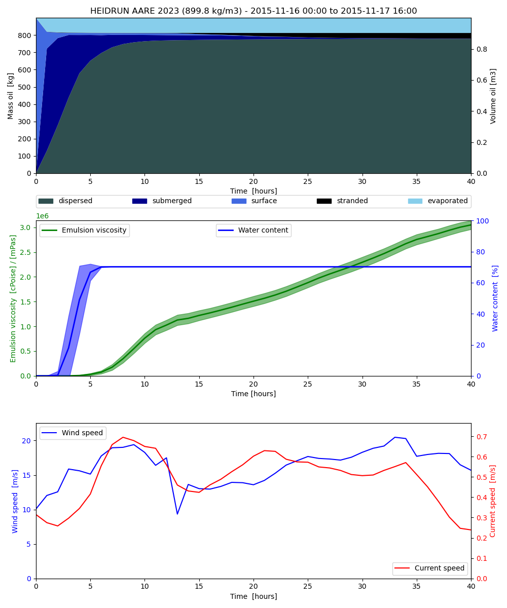
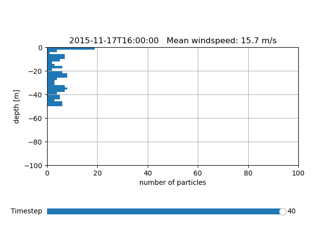
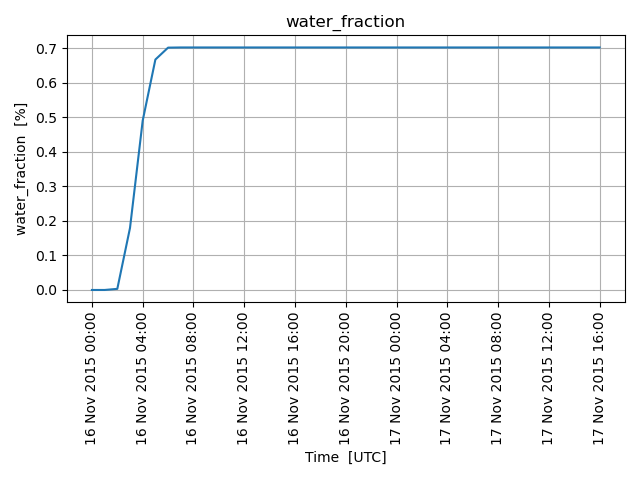

Note
Go to the end to download the full example code
Openoil
from datetime import datetime, timedelta
from opendrift.readers import reader_netCDF_CF_generic
from opendrift.models.openoil import OpenOil
o = OpenOil(loglevel=20, weathering_model='noaa')
print(o.oiltypes) # Print available oil types
15:01:42 INFO opendrift.models.basemodel:529: OpenDriftSimulation initialised (version 1.10.7 / v1.10.6-68-gc1c626a)
['GENERIC BUNKER C', 'GENERIC DIESEL', 'GENERIC FUEL OIL No. 6', 'GENERIC FUEL OIL No.2', 'GENERIC GASOLINE', 'GENERIC HEAVY CRUDE', 'GENERIC HEAVY FUEL OIL', 'GENERIC HOME HEATING OIL', 'GENERIC INTERMEDIATE FUEL OIL 180', 'GENERIC INTERMEDIATE FUEL OIL 300', 'GENERIC JET FUEL', 'GENERIC KEROSENE', 'GENERIC LIGHT CRUDE', 'GENERIC MEDIUM CRUDE', '15W40 MOTOR OIL, SHELL', 'AASGARD A 2003', 'AASGARD BLEND, STATOIL', 'AASTA HANSTEEN BLEND 2020', 'ABOOZAR', 'ABOOZAR (1999)', 'ABOOZAR, OIL & GAS', 'ABSORPTION OIL', 'ABU AL BU KHOOSH', 'ABU AL BU KHOOSH', 'ABU SAFAH', 'ABU SAFAH, ARAMCO', 'ADGO', 'ADGO (1999)', 'AGBAMI, STATOIL', 'AIRILE, BP', 'AL RAYYAN, BP', 'ALASKA NORTH SLOPE', 'ALASKA NORTH SLOPE (1989)', 'ALASKA NORTH SLOPE (MIDDLE PIPELINE, 1996)', 'ALASKA NORTH SLOPE (MIDDLE PIPELINE, 1997)', 'ALASKA NORTH SLOPE (MIDDLE PIPELINE, 1999)', 'ALASKA NORTH SLOPE (NORTHERN PIPELINE, 1996)', 'ALASKA NORTH SLOPE (NORTHERN PIPELINE, 1997)', 'ALASKA NORTH SLOPE (NORTHERN PIPELINE, 1999)', 'ALASKA NORTH SLOPE (SOCSEX, 1996)', 'ALASKA NORTH SLOPE (SOCSEX, 1999)', 'ALASKA NORTH SLOPE (SOUTHERN PIPELINE, 1996)', 'ALASKA NORTH SLOPE (SOUTHERN PIPELINE, 1999)', 'ALASKA NORTH SLOPE 2010', 'ALASKA NORTH SLOPE 2011', 'ALASKA NORTH SLOPE 2015', 'ALASKA NORTH SLOPE, BP', 'ALASKA NORTH SLOPE, OIL & GAS', 'ALASKA NORTH SLOPE-PUMP STATION #9, BP', 'ALBA', 'ALBA (1996)', 'ALBA (1999)', 'ALBERTA (1992)', 'ALBERTA (1999)', 'ALBERTA SWEET MIXED BLEND', 'ALBERTA SWEET MIXED BLEND (PETAWAWA, 1996)', 'ALBERTA SWEET MIXED BLEND (PETAWAWA, 1999)', 'ALBERTA SWEET MIXED BLEND (REFERENCE #2, 1996)', 'ALBERTA SWEET MIXED BLEND (REFERENCE #2, 1999)', 'ALBERTA SWEET MIXED BLEND (REFERENCE #3, 1996)', 'ALBERTA SWEET MIXED BLEND (REFERENCE #3, 1999)', 'ALBERTA SWEET MIXED BLEND (REFERENCE #4, 1996)', 'ALBERTA SWEET MIXED BLEND (REFERENCE #4, 1999)', 'ALGERIAN BLEND', 'ALGERIAN CONDENSATE', 'ALGERIAN CONDENSATE, CITGO', 'ALGERIAN CONDENSATE, SHELL OIL', 'ALGERIAN CONDENSATE, STATOIL', 'ALPINE', 'ALPINE SALES OIL', 'ALTA 2016', 'ALVE 2010', 'ALVE 2014', 'ALVHEIM BLEND 2009', 'ALVHEIM BOA 2009', 'ALVHEIM KAMELEON 2009', 'ALVHEIM KNELER 2009', 'AMAULIGAK (1996)', 'AMAULIGAK (1999)', 'AMNA', 'AMNA', 'AMNA, OIL & GAS', 'ANTAN, HUVENSA', 'ARAB EXTRA LIGHT, AMSA', 'ARABIAN (1996)', 'ARABIAN (1999)', 'ARABIAN EXTRA LIGHT, ARAMCO', 'ARABIAN EXTRA LIGHT, BOUCHARD', 'ARABIAN EXTRA LIGHT, MOBIL OIL AUSTRALIA', 'ARABIAN EXTRA LIGHT, PHILLIPS', 'ARABIAN EXTRA LIGHT, STAR ENTERPRISE', 'ARABIAN HEAVY', 'ARABIAN HEAVY (1999)', 'ARABIAN HEAVY, AMOCO', 'ARABIAN HEAVY, ARAMCO', 'ARABIAN HEAVY, CITGO', 'ARABIAN HEAVY, EXXON', 'ARABIAN HEAVY, OIL & GAS', 'ARABIAN HEAVY, STAR ENTERPRISE', 'ARABIAN LIGHT', 'ARABIAN LIGHT (1999)', 'ARABIAN LIGHT (2000)', 'ARABIAN LIGHT 96', 'ARABIAN LIGHT, ARAMCO', 'ARABIAN LIGHT, CITGO', 'ARABIAN LIGHT, OIL & GAS', 'ARABIAN LIGHT, PHILLIPS', 'ARABIAN LIGHT, SHELL OIL', 'ARABIAN LIGHT, STAR ENTERPRISE', 'ARABIAN MEDIUM', 'ARABIAN MEDIUM (1999)', 'ARABIAN MEDIUM, AMOCO', 'ARABIAN MEDIUM, API', 'ARABIAN MEDIUM, CHEVRON', 'ARABIAN MEDIUM, EXXON', 'ARABIAN MEDIUM, OIL & GAS', 'ARABIAN MEDIUM, PHILLIPS', 'ARABIAN MEDIUM, SHELL OIL', 'ARABIAN MEDIUM, STAR ENTERPRISE', 'ARDJUNA', 'ARDJUNA', 'ARDJUNA, API', 'ARDJUNA, OIL & GAS', 'ARDJUNA, SHELL REFINING PTY ', 'ARGYL', 'ARGYLL', 'ARGYLL, OIL & GAS', 'ARIMBI', 'ARIMBI (1999)', 'ARIMBI, OIL & GAS', 'ARUN CONDENSATE', 'ARUN CONDENSATE, SHELL OIL', 'ARUN, MARITIME SAFETY AUTHORITY OF NEW ZEALAND', 'ASGARD, STATOIL', 'ASHTART', 'ASHTART', 'ASHTART, OIL & GAS', 'ASPHALT CHARGED STOCK', 'ASPHALT CHARGED STOCK', 'ASPHALT PRIMER', 'ATKINSON', 'ATKINSON (1999)', 'ATLA KONDENSAT 2013', 'ATTAKA', 'ATTAKA (1999)', 'ATTAKA, OIL & GAS', 'ATTAKA, SHELL REFINING PTY ', 'ATTAKA/BEDAK', 'AUK', 'AUK', 'AUK, OIL & GAS', 'AUTOMOTIVE DIESEL FUEL, SHELL REFINING PTY ', 'AUTOMOTIVE DIESEL OIL, ESSO', 'AUTOMOTIVE GASOLINE, EXXON', 'AVALDSNES 2012', 'AVALON', 'AVALON', 'AVIATION GASOLINE 100', 'AVIATION GASOLINE 100', 'AVIATION GASOLINE 100LL', 'AVIATION GASOLINE 100LL, STAR ENTERPRISE', 'AVIATION GASOLINE 80', 'AVIATION GASOLINE 80', 'AVIATION TURBINE FUEL, SHELL REFINING PTY ', 'AZERI BTC, STATOIL', 'AZERI LIGHT, STATOIL', 'Aasgard Blend', 'Access West Blend Winter', 'Alaminos Canyon Block 25', 'Alaska North Slope', 'Alaska North Slope [2002]', 'Alaska North Slope [2010]', 'Alaska North Slope [2011]', 'Alaska North Slope [2012]', 'Alaska North Slope [2015]', 'Alberta Sweet Mixed Blend #4', 'Alberta Sweet Mixed Blend #5', 'Albian Heavy Synthetic', 'Amauligak', 'Anadarko HIA-376', 'Arabian Heavy [2004]', 'Arabian Light [2002]', 'Atkinson', 'Azeri Light', 'BACH HO', 'BACH HO (1999)', 'BACH HO, OIL & GAS', 'BACH HO, SHELL REFINING PTY ', 'BACHAGUERO, CITGO', 'BACHAQUERO', 'BACHAQUERO 17, EXXON', 'BACHAQUERO, OIL & GAS', 'BACHAQUERO, SHELL OIL', 'BACHAQUERO-DELAWARE RIVER, CITGO', 'BACHEQUERO HEAVY', 'BACHEQUERO MEDIUM', 'BADAK', 'BADAK (1999)', 'BADAK, OIL & GAS', 'BADAK, SHELL OIL', 'BAHIA', 'BAHRGANSAR, OIL & GAS', 'BAHRGANSAR/NOWRUZ', 'BAHRGANSAR/NOWRUZ (1999)', 'BAKR', 'BALDER 2002', 'BALDER BLEND 2010', 'BANOCO ABU SAFAH, ARAMCO', 'BARROW ISLAND', 'BARROW ISLAND', 'BARROW ISLAND, MARITIME SAFETY AUTHORITY OF NEW ZEALAND', 'BARROW ISLAND, OIL & GAS', 'BARROW ISLAND, SHELL REFINING PTY ', 'BARROW, BP', 'BASRAH', 'BASRAH HEAVY', 'BASRAH HEAVY', 'BASRAH HEAVY (1999)', 'BASRAH HEAVY, OIL & GAS', 'BASRAH LIGHT', 'BASRAH LIGHT (1999)', 'BASRAH LIGHT, AMSA', 'BASRAH LIGHT, MOBIL OIL AUSTRALIA', 'BASRAH MEDIUM', 'BASRAH MEDIUM (1999)', 'BASRAH MEDIUM, OIL & GAS', 'BASRAH, EXXON', 'BASRAH, OIL & GAS', 'BASS STRAIT', 'BCF 13', 'BCF 17', 'BCF 17, AMOCO', 'BCF 22', 'BCF 22, CITGO', 'BCF 24', 'BCF 24', 'BCF 24, CITGO', 'BCF 24, OIL & GAS', 'BEATRICE', 'BEATRICE', 'BEATRICE, OIL & GAS', 'BEKAPAI', 'BEKAPAI (1999)', 'BEKAPAI, MARITIME SAFETY AUTHORITY OF NEW ZEALAND', 'BEKAPAI, OIL & GAS', 'BEKOK', 'BEKOK (1999)', 'BEKOK, OIL & GAS', 'BEKOPAI, CALTEX', 'BELAYIM', 'BELAYIM (1999)', 'BELAYIM (LAND)', 'BELAYIM (MARINE)', 'BELAYIM, OIL & GAS', 'BELIDA', 'BELIDA (1999)', 'BELIDA, BP', 'BELIDA, CALTEX', 'BELIDA, MOBIL OIL AUSTRALIA ', 'BELIDA, OIL & GAS', 'BELINDA, AMSA', 'BELINDA, MARITIME SAFETY AUTHORITY OF NEW ZEALAND', 'BELRIDGE HEAVY', 'BELRIDGE HEAVY', 'BENIN RIVER, CHEVRON', 'BENT HORN', 'BENT HORN (1999)', 'BENT HORN A-02', 'BENT HORN A-02 (1999)', 'BERRI', 'BERRI (1999)', 'BERRI A-21, ARAMCO', 'BERYL', 'BERYL', 'BERYL, OIL & GAS', 'BETA', 'BETA', 'BETA PRODUCTION, SHELL OIL', 'BFC 21.9, CITGO', 'BINTULU', 'BINTULU (1999)', 'BINTULU, OIL & GAS', 'BIODIESEL', 'BLINA, BP', 'BOLOBO', 'BOMBAY HIGH', 'BOMBAY HIGH (1999)', 'BOMBAY HIGH, OIL & GAS', 'BONITO P/L SOUR, SHELL OIL', 'BONNY LIGHT', 'BONNY LIGHT (1999)', 'BONNY LIGHT, CITGO', 'BONNY LIGHT, OIL & GAS', 'BONNY LIGHT, SHELL OIL', 'BONNY MEDIUM', 'BONNY MEDIUM (1999)', 'BONNY MEDIUM, AMOCO', 'BONNY MEDIUM, CITGO', 'BONNY MEDIUM, OIL & GAS', 'BONTANG MIX, BP', 'BORHOLLA', 'BOSCAN', 'BOSCAN (1999)', 'BOSCAN, AMOCO', 'BOSCAN, OIL & GAS', 'BOW RIVER BLENDED', 'BOW RIVER BLENDED (1999)', 'BOW RIVER HEAVY', 'BOW RIVER HEAVY (1999)', 'BOW RIVER, OIL & GAS', 'BOYLA CRUDE 2016', 'BRAE', 'BRAE', 'BRAE, OIL & GAS', 'BRAGE 2013', 'BRASS RIVER', 'BRASS RIVER, CITGO', 'BRASS RIVER, MARITIME SAFETY AUTHORITY OF NEW ZEALAND', 'BRASS RIVER, OIL & GAS', 'BRASS RIVER, PHILLIPS', 'BRASS RIVER, SHELL OIL', 'BRASSE 2018', 'BREAM 2011', 'BREGA', 'BREGA (1999)', 'BREGA, ARCO', 'BREGA, OIL & GAS', 'BRENT', 'BRENT BLEND', 'BRENT BLEND', 'BRENT BLEND 96', 'BRENT MIX, EXXON', 'BRENT SPAR', 'BRENT, CITGO', 'BRENT, OIL & GAS', 'BRENT, PHILLIPS', 'BRENT, SUN', 'BRIGHT STOCK 145, STAR ENTERPRISE', 'BRIGHT STOCK 150, STAR ENTERPRISE', 'BRYNHILD CRUDE 2015', 'BUCHAN', 'BUCHAN', 'BUCHAN, OIL & GAS', 'BUNK FUEL OIL (IRVING WHALE)', 'BUNKER C FUEL OIL', 'BUNKER C FUEL OIL', 'BUNKER C FUEL OIL (ALASKA)', 'BUNKER C FUEL OIL (ALASKA)', 'BUNKER C FUEL OIL (IRVING WHALE)', 'BUNKER C, JEA', 'BUNYU', 'BUNYU (1999)', 'BUNYU, OIL & GAS', 'BURGAN', 'BURGAN, OIL & GAS', 'Bakken', 'Balder Blend', 'Banyu Urip', 'Basrah', 'Basrah Heavy', 'Biodiesel Canola B100', 'Biodiesel Canola B20', 'Biodiesel Canola B5', 'Biodiesel Canola-B100', 'Biodiesel Canola-B20', 'Biodiesel Canola-B5', 'Biodiesel Soy B100', 'Biodiesel Soy B20', 'Biodiesel Soy B5', 'Biodiesel Soy-1002-B100', 'Biodiesel Soy-1002-B20', 'Biodiesel Soy-1002-B5', 'Biodiesel Tallow B100', 'Biodiesel Tallow B100', 'Biodiesel Tallow B20', 'Biodiesel Tallow B20', 'Biodiesel Tallow B5', 'Biodiesel Tallow B5', 'Bonga', 'Brent Blend', 'Bunker C - IFO-300 [1994]', 'Bunker C MV Manolis', 'Bunker C MV Manolis 2015-May operation', 'Bunker C MV Manolis 2015-Oct. operation', 'Bunker C Zalinski', 'Bunker C [1987]', 'CABINDA', 'CABINDA BLEND, SHELL OIL', 'CABINDA, CITGO', 'CABINDA, OIL & GAS', 'CABINDA, PHILLIPS', 'CALIFORNIA (API 11)', 'CALIFORNIA (API 15)', 'CALIFORNIA (API GRAVITY:11)', 'CALIFORNIA (API GRAVITY:15)', 'CAMAR', 'CANADON', 'CANADON SECO', 'CANADON SECO (1999)', 'CANDON SEC, PHILLIPS', 'CANO LIMON', 'CANO LIMON', 'CANO LIMON, CITGO', 'CANO LIMON, OIL & GAS', 'CANO LIMON, PHILLIPS', 'CANOLA OIL', 'CARPENTERIA', 'CARPINTERIA', 'CASTOR OIL', 'CAT CRACKING FEED', 'CATALYTIC CRACKING FEED', 'CAURUS 2011', 'CEUTA', 'CEUTA (1999)', 'CEUTA, API', 'CEUTA, OIL & GAS', 'CHALLIS, BHP PETROLEUM', 'CHAMPION EXPORT', 'CHAMPION EXPORT (1999)', 'CHAMPION EXPORT, OIL & GAS', 'CHERVIL, NOVUS WA PTY LTD', 'CINTA', 'CINTA (1999)', 'CINTA, OIL & GAS', 'CINTA, SHELL REFINING PTY ', 'CLARIFIED OIL', 'CLOV', 'CLOV, STATOIL', 'COAL OIL POINT SEEP OIL', 'COBAN BLEND', 'COBAN BLEND, PHILLIPS', 'COGNAC-BLOCK 194, SHELL OIL', 'COHASSET', 'COHASSET (1999)', 'COLD LAKE', 'COLD LAKE BITUMEN', 'COLD LAKE BITUMEN, ESSO', 'COLD LAKE BLEND', 'COLD LAKE BLEND, ESSO', 'COLD LAKE DILUENT', 'COLD LAKE DILUENT, ESSO', 'COLD LAKE, EXXON', 'COLD LAKE, OIL & GAS', 'CONDENSATE (SWEET), ENCANA CORP.', 'COOK INLET, DRIFT RIVER TERMINAL', 'COOPER BASIN', 'COOPER BASIN', 'COOPER BASIN FULL RANGE NAPHTHA, SANTOS LTD', 'COOPER BASIN HEAVY NAPHTHA, SANTOS LTD', 'COOPER BASIN LIGHT NAPHTHA, SANTOS LTD', 'COOPER BASIN, SANTOS LTD', 'CORMORANT', 'CORMORANT NORTH', 'CORMORANT NORTH (1999)', 'CORMORANT NORTH, OIL & GAS', 'CORMORANT SOUTH', 'CORMORANT SOUTH (1999)', 'CORMORANT SOUTH, OIL & GAS', 'CORROSION INHIBITOR SOLVENT (DESTIN DOME)', 'COSSACK', 'COSSACK, SHELL REFINING PTY ', 'CRACKER FEED, AMSA', 'CRACKER FEED, MOBIL OIL AUSTRALIA ', 'CUSIANA', 'CUSIANA', 'CUSIANA, MOTIVA ENTERPRISES LLC', 'CYRUS, ITOPF', 'Chayvo', 'Cold Lake Bitumen [1988]', 'Cold Lake Blend', 'Cold Lake Blend Summer [2014]', 'Cold Lake Blend Winter [2013]', 'Cold Lake Blend Winter [2015]', 'Cold Lake Blend Winter [2019]', 'Cook Inlet [2003]', 'Curlew', 'DAI HUNG', 'DAI HUNG (1999)', 'DALIA, STATOIL', 'DAN', 'DAN', 'DAN, OIL & GAS', 'DANISH NORTH SEA', 'DANISH NORTH SEA (1999)', 'DANMARK', 'DAQIN', 'DECANT OIL', 'DESTIN DOME CIS, MMS', 'DF2 SUMMER (DIESEL), TESORO', 'DF2 WINTER (DIESEL), TESORO', 'DIA HUNG, OIL & GAS', 'DIESEL', 'DIESEL FUEL OIL (ALASKA)', 'DIESEL FUEL OIL (ALASKA)', 'DIESEL FUEL OIL (CANADA)', 'DIESEL FUEL OIL (SOUTHERN USA 1994)', 'DIESEL FUEL OIL (SOUTHERN USA 1997)', 'DIESEL FUEL OIL NO.2 (BONDED), TESORO', 'DIESEL/HEATING OIL NO.2, CHEVRON', 'DJENO BLEND', 'DJENO BLEND (1999)', 'DJENO BLEND, OIL & GAS', 'DJENO, PHILLIPS', 'DJENO, SHELL OIL', 'DOBA', 'DORROOD', 'DORROOD (1999)', 'DORROOD, OIL & GAS', 'DOS CUADRAS', 'DOS CUADRAS', 'DRAUGEN 2008', 'DRIVIS 2017', 'DUAL PURPOSE KEROSINE, MARITIME SAFETY AUTHORITY OF NEW ZEALAND', 'DUBAI', 'DUBAI (1999)', 'DUBAI, CITGO', 'DUBAI, MARITIME SAFETY AUTHORITY OF NEW ZEALAND', 'DUBAI, OIL & GAS', 'DUGONG 2022', 'DUKHAN', 'DUKHAN (1999)', 'DUKHAN, OIL & GAS', 'DUNLIN', 'DUNLIN', 'DUNLIN', 'DURI, OIL & GAS', 'DURI, PHILLIPS', 'DUVA 2021', 'DVALIN 2020', 'Dalia', 'Diesel (summer) COM ULSD', 'Diesel Echo Bay (B5 Biodiesel)', 'Diesel ULSD (2006)', 'Diesel [2002]', 'Doba Blend', 'Dos Cuadros HE-05 [2011]', 'Dos Cuadros HE-26 [2011]', 'EAGLE FORD SHALE', 'EAST SPAB, MOBIL OIL AUSTRALIA', 'EAST SPAR, AMSA', 'EAST TEXAS', 'EAST ZEIT MIX', 'EAST ZEIT MIX (1999)', 'EAST ZEIT MIX, OIL & GAS', 'EC 195-CONDENSATE, PHILLIPS', 'EKOFISK', 'EKOFISK', 'EKOFISK 2002', 'EKOFISK BLEND 2002', 'EKOFISK BLEND 2011', 'EKOFISK J 2015', 'EKOFISK, OIL & GAS', 'ELDFISK 2002', 'ELDFISK B 2015', 'ELDFISK BLEND 2011', 'ELDFISK KOMPLEKS 2015', 'ELECTRICAL INSULATING OIL (NEW)', 'ELECTRICAL INSULATING OIL (USED)', 'ELECTRICAL INSULATING OIL (USED)', 'ELECTRICAL INSULATING OIL (VIRGIN)', 'ELECTRICAL INSULATING OIL (VOLTESSO 35)', 'ELECTRICAL LUBRICATING OIL (USED)', 'ELECTRICAL LUBRICATING OIL (VIRGIN)', 'ELLI 1999', 'ELLI SOUTH 1999', 'EMBLA 2002', 'EMERALD', 'EMERALD (1999)', 'EMPIRE', 'EMPIRE', 'EMPIRE ISLAND, AMOCO', 'ENDICOTT', 'ENDICOTT', 'ENDICOTT 96', 'EOCENE', 'EOCENE', 'EOCENE, ITOPF', 'EOCENE, OIL & GAS', 'ERAWAN CONDENSATE', 'ERAWAN CONDENSATE, SHELL OIL', 'ERAWAN, MOBIL OIL AUSTRALIA ', 'ES SIDER', 'ES SIDER (1999)', 'ES SIDER, OIL & GAS', 'ESCALANTE', 'ESCALANTE (1999)', 'ESCALANTE, ITS', 'ESCALANTE, OIL & GAS', 'ESCALANTE, PHILLIPS', 'ESCRAVOS', 'ESCRAVOS (1999)', 'ESCRAVOS SWAMP BLEND, CHEVRON', 'ESCRAVOS, AMOCO', 'ESCRAVOS, CHEVRON', 'ESCRAVOS, OIL & GAS', 'ESCRAVOS, SHELL OIL', 'ESPOIR', 'ESPOIR (1999)', 'ESPOIR, OIL & GAS', 'ETCHEGOIN, SHELL OIL', 'EUGENE ISLAND BLOCK 32', 'EUGENE ISLAND BLOCK 32', 'EUGENE ISLAND BLOCK 43', 'EUGENE ISLAND BLOCK 43', 'EVERDELL', 'Ebok', 'Ekofisk', 'Endicott', 'Erha', 'FAO, CITGO', 'FCC FEED', 'FCC HEAVY CYCLE OIL', 'FCC MEDIUM CYCLE OIL', 'FCC VGO', 'FEDERATED', 'FEDERATED (1994)', 'FEDERATED (1998)', 'FEDERATED (SOCSEX)', 'FEDERATED LIGHT AND MEDIUM', 'FEDERATED LIGHT AND MEDIUM (1999)', 'FEDERATED LIGHT AND MEDIUM, OIL & GAS', 'FENJA (PIL) 2015', 'FLASHED FEED STOCKS', 'FLOTTA', 'FLOTTA', 'FLOTTA MIX', 'FLOTTA, CITGO', 'FLOTTA, OIL & GAS', 'FLOTTA, PHILLIPS', 'FLOTTA, SHELL OIL', 'FLUID CATALYTIC CRACKER FEED', 'FLUID CATALYTIC CRACKER HEAVY CYCLE OIL', 'FLUID CATALYTIC CRACKER LIGHT CYCLE OIL', 'FLUID CATALYTIC CRACKER MEDIUM CYCLE OIL', 'FLUID CATALYTIC CRACKER VIRGIN GAS OIL', 'FOGELBERG CONDENSATE 2021', 'FORCADOS', 'FORCADOS BLEND', 'FORCADOS BLEND (1999)', 'FORCADOS, AMOCO', 'FORCADOS, BP', 'FORCADOS, CITGO', 'FORCADOS, SHELL OIL', 'FORKED ISLAND TERMINAL, AMOCO', 'FOROOZAN', 'FOROOZAN (1999)', 'FOROOZAN, OIL & GAS', 'FORSETI 2002', 'FORTIES', 'FORTIES BLEND', 'FORTIES BLEND (1999)', 'FORTIES, OIL & GAS', 'FORTIES, SHELL OIL', 'FORTIES, STATOIL', 'FOSSEKALL 2013', 'FOSTERTON', 'FRAM 2013', 'FROSK 2020', 'FROY 1996', 'FUEL OIL N0.1 (JP-8)', 'FUEL OIL NO.1 (AVJET A), STAR ENTERPRISE', 'FUEL OIL NO.1 (DIESEL/HEATING FUEL), PETRO STAR', 'FUEL OIL NO.1 (JET B, ALASKA)', 'FUEL OIL NO.1 (JET B, ALASKA)', 'FUEL OIL NO.1 (JET FUEL A)', 'FUEL OIL NO.1 (JET FUEL A-1)', 'FUEL OIL NO.1 (JET FUEL B)', 'FUEL OIL NO.1 (JP-1)', 'FUEL OIL NO.1 (JP-1)', 'FUEL OIL NO.1 (JP-3)', 'FUEL OIL NO.1 (JP-3)', 'FUEL OIL NO.1 (JP-4)', 'FUEL OIL NO.1 (JP-4)', 'FUEL OIL NO.1 (JP-5)', 'FUEL OIL NO.1 (JP-5)', 'FUEL OIL NO.1 (JP-6)', 'FUEL OIL NO.1 (JP-7)', 'FUEL OIL NO.1 (JP-8)', 'FUEL OIL NO.1 (KEROSENE)', 'FUEL OIL NO.1 (KEROSENE) ', 'FUEL OIL NO.2', 'FUEL OIL NO.2', 'FUEL OIL NO.2', 'FUEL OIL NO.2', 'FUEL OIL NO.2 (DIESEL), STAR ENTERPRISE', 'FUEL OIL NO.2 (HIGH AROMATIC CONTENT HEATING OIL)', 'FUEL OIL NO.2 (HO/DIESEL), EXXON', 'FUEL OIL NO.2, AMOCO', 'FUEL OIL NO.4', 'FUEL OIL NO.4', 'FUEL OIL NO.5', 'FUEL OIL NO.5', 'FUEL OIL NO.6', 'FUEL OIL NO.6', 'FULMAR', 'FULMAR', 'FULMAR, OIL & GAS', 'FURRIAL, CITGO', 'FURRIAL, SHELL OIL', 'FURRIAL/MESA 28, EXXON', 'Forties Blend', 'Fuel Oil # 5', 'GALEOTA MIX', 'GALEOTA MIX (1999)', 'GALEOTA MIX, AMOCO', 'GALEOTA MIX, OIL & GAS', 'GAMBA', 'GAMBA (1999)', 'GARANTIANA 2013', 'GARDEN BANKS BLOCK 387', 'GARDEN BANKS BLOCK 426', 'GAS OIL (CRACKED)', 'GAS OIL (CRACKED)', 'GAS OIL 10 ppm S 2017', 'GAS OIL, EXXON', 'GAS OIL, TESORO', 'GASOLINE (CASINGHEAD)', 'GASOLINE (CASINGHEAD)', 'GASOLINE (LEADED)', 'GASOLINE (LEADED)', 'GASOLINE (UNLEADED), SHELL', 'GASOLINE BLENDING STOCK (ALKYLATE), EXXON', 'GASOLINE BLENDING STOCK (REFORMATE), EXXON', 'GASOLINE BLENDING STOCKS', 'GASOLINE BLENDING STOCKS (ALKYLATES)', 'GASOLINE BLENDING STOCKS (REFORMATES)', 'GASOLINE: BLENDING STOCKS (ALKYLATES)', 'GASOLINE: BLENDING STOCKS (REFORMATES)', 'GASOLINE: POLYMER', 'GAUPE 2011', 'GENESIS', 'GIMBO, STATOIL', 'GINA KROG CRUDE (2018)', 'GIPPSLAND', 'GIPPSLAND (1999)', 'GIPPSLAND MIX, ITOPF', 'GIPPSLAND, AMSA', 'GIPPSLAND, BHP PETROLEUM', 'GIPPSLAND, EXXON', 'GIPPSLAND, OIL & GAS', 'GIPPSLAND, SHELL OIL', 'GIPPSLAND, SHELL REFINING PTY ', 'GIRASSOL', 'GIRASSOL, STATOIL', 'GJOA 2011', 'GLITNE 2002', 'GOLIAT BLEND 50/50 2008', 'GOLIAT BLEND 70/30 2008', 'GOLIAT KOBBE 2008', 'GOLIAT REALGRUNNEN 2003', 'GOLIAT REALGRUNNEN 2008', 'GORM', 'GORM', 'GORM, OIL & GAS', 'GRANE 1997', 'GRANITE POINT', 'GRANITE POINT', 'GREEN CANYON BLOCK 109', 'GREEN CANYON BLOCK 109', 'GREEN CANYON BLOCK 184', 'GREEN CANYON BLOCK 65', 'GREEN CANYON BLOCK 65', 'GREEN CANYON, SHELL OIL', 'GRIFFIN', 'GRIFFIN (1999)', 'GRIFFIN, AMSA', 'GRIFFIN, BHP PETROLEUM', 'GRIFFIN, MARITIME SAFETY AUTHORITY OF NEW ZEALAND', 'GRIFFIN, OIL & GAS', 'GROSBEAK 2012', 'GUAFITA, CITGO', 'GUDRUN 2012', 'GUDRUN 2019', 'GULF ALBERTA LIGHT AND MEDIUM', 'GULF ALBERTA LIGHT AND MEDIUM (1999)', 'GULF ALBERTA, OIL & GAS', 'GULF OF SUEZ', 'GULF OF SUEZ MIX', 'GULF OF SUEZ, OIL & GAS', 'GULF OF SUEZ, PHILLIPS', 'GULLFAKS', 'GULLFAKS', 'GULLFAKS A BLEND 2010', 'GULLFAKS C BLEND 2010', 'GULLFAKS SOR 1996', 'GULLFAKS, EXXON', 'GULLFAKS, OIL & GAS', 'GYDA 2002', 'Gail Well E010', 'Gail Well E019', 'Gindungo', 'Gippsland Blend', 'Girassol', 'Gorgon', 'Grane', 'Green Canyon Block 200', 'Gudrun Blend', 'Gullfaks Blend', 'HANDIL', 'HANDIL (1999)', 'HANDIL, BP', 'HANDIL, MARITIME SAFETY AUTHORITY OF NEW ZEALAND', 'HARDING, SHELL OIL', 'HARRIET, APACHE ENERGY LTD', 'HAVIS 2013', 'HEAVY CAT CYCLE OIL, EXXON', 'HEAVY DISTILLATE MARINE ECA 50 2017', 'HEAVY LAKE MIX', 'HEAVY REFORMATE', 'HEAVY REFORMATE', 'HEBRON', 'HEIDRUN', 'HEIDRUN AaRE 2004', 'HEIDRUN EXPORT BLEND 2004', 'HEIDRUN TILJE 2004', 'HFO 6303 [2002]', 'HI 317, PHILLIPS', 'HI 330/349 CONDENSATE, PHILLIPS', 'HI 561-GRAND CHENIER, PHILLIPS', 'HI A-310-B/CONDENSATE, PHILLIPS', 'HIBERNIA', 'HIBERNIA', 'HIBERNIA (EPA 86)', 'HIBERNIA (EPA 86)', 'HIBERNIA BLEND, STATOIL', 'HIGH ISLAND BLOCK 154, PHILLIPS', 'HIGH ISLAND SWEET, SHELL OIL', 'HIGH ISLAND, AMOCO', 'HIGH VISCOSITY FUEL OIL', 'HIGH VISCOSITY FUEL OIL', 'HOME HEATING OIL', 'HONDO', 'HONDO', 'HONDO BLEND', 'HONDO BLEND', 'HONDO BLEND, OIL & GAS', 'HONDO MONTEREY', 'HONDO MONTEREY', 'HONDO MONTEREY, OIL & GAS', 'HONDO SANDSTONE', 'HONDO SANDSTONE, OIL & GAS', 'HONDO SANSTONE', 'HOOPS BLEND, ExxonMobil', 'HOOPS Blend', 'HOUT', 'HOUT (1999)', 'HOUT, OIL & GAS', 'HUIZHOU', 'HULDRA KONDENSAT 1998', 'HUNGO BLEND, STATOIL', 'HUNTINGTON BEACH, SHELL OIL', 'HUTTON', 'HYDRA', 'HYDRA', 'HYDRA, OIL & GAS', 'Harmony', 'Hebron', 'Hebron M-04 [2005]', 'Hebron [2018]', 'Heritage HE 05', 'Heritage HE 26', 'Hibernia Blend', 'Hibernia [1999]', 'Hibernia [2018]', 'Hungo Blend', 'Husky Energy SGS', 'IF-30 BUNKER FUEL OIL', 'IF-30 FUEL OIL', 'IF-30 FUEL OIL (SVALBARD)', 'IF-30 FUEL OIL 180', 'IFO 120', 'IFO 180', 'IFO 180', 'IFO 180 [2004]', 'IFO 300', 'IFO 300', 'IFO-180LS 2014', 'IFO-180NS 2014', 'IFO-380LS 2014', 'IFO-80LS 2014', 'IMA, CALTEX', 'INTERMEDIATE FUEL OIL 180 (SOCSEX)', 'INTERMEDIATE FUEL OIL 300', 'INTERMEDIATE FUEL OIL 300 (SOCSEX)', 'INTERPROVINCIAL', 'IPAR 3', 'IPPL LIGHT SOUR BLEND', 'IRANIAN HEAVY', 'IRANIAN HEAVY (1999)', 'IRANIAN HEAVY, ARCO', 'IRANIAN HEAVY, OIL & GAS', 'IRANIAN HEAVY, PHILLIPS', 'IRANIAN LIGHT', 'IRANIAN LIGHT (1999)', 'IRANIAN LIGHT, OIL & GAS', 'IRIS CONDENSATE 2020', 'ISSUNGNAK', 'ISTHMUS', 'ISTHMUS (1999)', 'ISTHMUS, CITGO', 'ISTHMUS, OIL & GAS', 'ISTHMUS, PHILLIPS', 'ISTHMUS, SHELL OIL', 'ISTHMUS/MAYA BLEND', 'ISTHMUS/REFORMA/CACTUS, API', 'IVAR AASEN 2012', 'Independent Hub', 'Issungnak', 'JABIRU 1A, BHP PETROLEUM', 'JABIRU, AMSA', 'JABIRU, BHP PETROLEUM', 'JABIRU, SHELL OIL', 'JACKSON, BP', 'JATIBARANG', 'JATIBARANG (1999)', 'JATIBARANG, OIL & GAS', 'JET A (DFA), TESORO', 'JET A-1, MARITIME SAFETY AUTHORITY OF NEW ZEALAND', 'JET A/JET A-1', 'JET B', 'JET B (ALASKA)', 'JET FUEL, TESORO', 'JOBO', 'JOBO/MORICHAL, ITOPF', 'JORDBAER 2011', 'JOTUN, OIL & GAS JOURNAL', 'JP-4', 'JP-5', 'JP-8', 'JP-8', 'Jotun Blend', 'KABINDA, GALLAGER MARINE', 'KERAPU, BP', 'KERN COUNTY BLEND', 'KERN RIVER-SWEPI, SHELL OIL', 'KHAFJI', 'KHAFJI (1999)', 'KHAFJI, MARITIME SAFETY AUTHORITY OF NEW ZEALAND', 'KHAFJI, BP', 'KHAFJI, OIL & GAS', 'KHALDA', 'KHALDA (1999)', 'KIMKOL', 'KIMKOL, OIL & GAS', 'KIRKUK', 'KIRKUK BLEND', 'KIRKUK BLEND, OIL & GAS JOURNAL', 'KIRKUK, ARCO', 'KIRKUK, EXXON', 'KIRKUK, OIL & GAS', 'KIRKUK, SHELL OIL', 'KITTIWAKE', 'KITTIWAKE (1999)', 'KITTIWAKE, OIL & GAS', 'KOAKOAK', 'KOAKOAK 0-22', 'KOAKOAK 0-22A', 'KOAKOAK 0-22A (1999)', 'KOLE', 'KOLE MARINE BLEND', 'KOLE MARINE BLEND (1999)', 'KOLE MARINE BLEND, OIL & GAS', 'KOLE MARINE, AMOCO', 'KOLE, SHELL OIL', 'KOME', 'KOMINEFT', 'KOMINEFT (1999)', 'KOPANOAR', 'KOPANOAR (1999)', 'KOPANOAR 2I-44', 'KOPANOAR M-13', 'KOPANOAR M-13A', 'KRISTIN 2006', 'KUKAPO, CALTEX', 'KUKAPU, CALTEX', 'KUMKOL', 'KUMKOL, OIL & GAS', 'KUPARUK', 'KUPARUK', 'KUPARUK, OIL & GAS', 'KUTUBU', 'KUTUBU (1999)', 'KUTUBU LIGHT, AMSA', 'KUTUBU LIGHT, BHP PETROLEUM', 'KUTUBU LIGHT, MOBIL OIL AUSTRALIA ', 'KUTUBU, AMSA', 'KUTUBU, MARITIME SAFETY AUTHORITY OF NEW ZEALAND', 'KUTUBU, OIL & GAS', 'KUTUBU, SHELL OIL', 'KUTUBU, SHELL REFINING PTY ', 'KUWAIT', 'KUWAIT (1999)', 'KUWAIT (2001)', 'KUWAIT CRUDE OIL (LITERATURE VALUES)', 'KUWAIT EXPORT', 'KUWAIT EXPORT, OIL & GAS', 'KUWAIT LIGHT, PHILLIPS', 'KUWAIT, ARCO', 'KUWAIT, BP', 'KVITEBJORN 2009', 'KVITEBJORN 2019', 'Kearl', 'Kissanje Blend', 'Kutubu', 'LA ROSA', 'LA ROSA MEDIUM', 'LA ROSA MEDIUM, OIL & GAS', 'LABUAN BLEND', 'LABUAN BLEND (1999)', 'LABUAN BLEND, OIL & GAS', 'LABUAN, MARITIME SAFETY AUTHORITY OF NEW ZEALAND', 'LAGO', 'LAGO (1999)', 'LAGO MEDIO', 'LAGO TRECO', 'LAGO TRECO, CITGO', 'LAGOCINCO, SHELL OIL', 'LAGOMAR, SHELL OIL', 'LAGOMEDIO', 'LAGOMEDIO, OIL & GAS', 'LAGOTRECO', 'LAGOTRECO, SHELL OIL', 'LAGUNA', 'LAGUNA 22, CITGO', 'LAGUNA BLEND 24, CITGO', 'LAGUNA, CITGO', 'LALANG', 'LALANG, SHELL REFINING PTY ', 'LARG TRECO MEDIUM, CITGO', 'LAVRANS 1997', 'LEDUC WOODBEND', 'LEONA', 'LEONA (1999)', 'LEONA, CITGO', 'LEONA, OIL & GAS', 'LIGHT CAT CYCLE OIL, EXXON', 'LIGHT LOUISIANNA SWEET, BP', 'LIGHT NAPHTHA, EXXON', 'LIGHT SOUR BLEND', 'LILLE PRINSEN 2022', 'LILLEFRIGG KONDENSAT 1996', 'LINERLE 2005', 'LISBURNE', 'LIUHUA, AMOCO', 'LIVERPOOL BAY', 'LIVERPOOL BAY, OIL & GAS JOURNAL', 'LIVERPOOL BAY, MOTIVA ENTERPRISES LLC', 'LLOYDMINSTER', 'LLOYDMINSTER', 'LLOYDMINSTER, OIL & GAS', 'LLOYDMINSTER, SHELL OIL', 'LOKELE, CITGO', 'LOKELE, EXXON', 'LOKELE, SHELL OIL', 'LORETO', 'LORETO (1999)', 'LORETO, OIL & GAS', 'LORETO, SHELL OIL', 'LOUISIANA', 'LOUISIANA (1999)', 'LOW SULFUR VACUUM GAS OIL, CHEVRON', 'LOW SULFUR WAXY GAS OIL', 'LOW SULFUR WAXY GAS OIL', 'LOW SULFUR WAXY RESIDUE, AMSA', 'LOW SULFUR WAXY RESIDUUM', 'LOW SULFUR WAXY RESIDUUM', 'LSWR', 'LUBRICATING OIL (AIR COMPRESSOR) NEW', 'LUBRICATING OIL (AIR COMPRESSOR) USED', 'LUBRICATING OIL (AUTO ENGINE OIL, USED)', 'LUBRICATING OIL (AUTO ENGINE OIL, VIRGIN)', 'LUBRICATING OIL (ELECTRICAL) NEW', 'LUBRICATING OIL (ELECTRICAL) USED', 'LUBRICATING OIL (ENGINE, DIESEL LOCOMOTIVE) GRADE 20W40', 'LUBRICATING OIL (ENGINE, DIESEL LOCOMOTIVE) GRADE 40', 'LUBRICATING OIL (EXTREME PRESSURE GEAR OIL)', 'LUCINA MARINE', 'LUCINA MARINE (1999)', 'LUCINA MARINE, OIL & GAS', 'LUCINA, API', 'LUCINA, SHELL OIL', 'LUCKENBACH FUEL OIL', 'LUCULA', 'LUCULA (1999)', 'LUFENG, STATOIL', 'LUNO 2011', 'LUNO II 2014', 'Liza', 'MAGNUS', 'MAGNUS', 'MAGNUS, OIL & GAS', 'MAIN PASS 140, PENNZOIL', 'MAIN PASS 49 CONDENSATE, SHELL OIL', 'MAIN PASS BLOCK 306', 'MAIN PASS BLOCK 306', 'MAIN PASS BLOCK 37', 'MAIN PASS BLOCK 37', 'MALONGO', 'MALONGO (1999)', 'MANDJI', 'MANDJI (1999)', 'MANDJI, API', 'MANDJI, OIL & GAS', 'MANDJI, SHELL OIL', 'MARALAGO 22, CITGO', 'MARGHAM', 'MARGHAM LIGHT', 'MARGHAM LIGHT (1999)', 'MARGHAM LIGHT, OIL & GAS', 'MARGHAM, BP', 'MARIA 2013', 'MARIB, PHILLIPS', 'MARINE DIESEL F-76, MANCHESTER FUEL', 'MARINE DIESEL FUEL OIL', 'MARINE DIESEL FUEL OIL', 'MARINE DIESEL OIL, ESSO', 'MARINE DIESEL, U.S. NAVY', 'MARINE GAS OIL', 'MARINE GAS OIL', 'MARINE GAS OIL (HEAVY)', 'MARINE GAS OIL (HEAVY)', 'MARINE GAS OIL 500 ppm S 2017', 'MARINE INTERMEDIATE FUEL OIL', 'MARINE INTERMEDIATE FUEL OIL', 'MARJAN/ZULUF, ARAMCO', 'MARS BLEND', 'MARS BLEND', 'MARS TLP', 'MARTIN LINGE CONDENSATE 2016', 'MARTIN LINGE CRUDE 2016', 'MARULK (2014)', 'MAUI B, MARITIME SAFETY AUTHORITY OF NEW ZEALAND', 'MAUI CONDENSATE, MARITIME SAFETY AUTHORITY OF NEW ZEALAND', 'MAUI F SAND, MARITIME SAFETY AUTHORITY OF NEW ZEALAND', 'MAUI, SHELL REFINING PTY ', 'MAUREEN', 'MAUREEN, OIL & GAS', 'MAYA', 'MAYA', 'MAYA (1997)', 'MAYA, AMOCO', 'MAYA, CITGO', 'MAYA, EXXON', 'MAYA, OIL & GAS', 'MAYA, PHILLIPS', 'MAYA, SHELL OIL', 'MAYOGIAK', 'MCARTHUR RIVER', 'MCKEE BLEND 10% NGAT-1, MARITIME SAFETY AUTHORITY OF NEW ZEALAND', 'MCKEE BLEND 10% NGAT-2, MARITIME SAFETY AUTHORITY OF NEW ZEALAND', 'MCKEE BLEND 10% NGAT-3, MARITIME SAFETY AUTHORITY OF NEW ZEALAND', 'MCKEE BLEND 25%, MARITIME SAFETY AUTHORITY OF NEW ZEALAND', 'MCKEE BLEND 50%, MARITIME SAFETY AUTHORITY OF NEW ZEALAND', 'MCKEE BLEND, MARITIME SAFETY AUTHORITY OF NEW ZEALAND', 'MCKEE, SHELL REFINING PTY ', 'MEDANITO', 'MEDANITO (1999)', 'MEDANITO, OIL & GAS', 'MENEMOTA', 'MENEMOTA, CITGO', 'MEREY', 'MEREY (1999)', 'MEREY, OIL & GAS', 'MESA 28, CITGO', 'MESA 30, CITGO', 'METHYL TERTIARY BUTYL ETHER', 'MIANDOUM', 'MIDDLE GROUND SHOAL', 'MIDGARD 1991', 'MILNE POINT', 'MINAS, SHELL REFINING PTY ', 'MINERAL OIL', 'MINERAL SEAL OIL', 'MINERAL SPIRITS', 'MINERAL TURPS, SHELL REFINING PTY ', 'MIRI LIGHT', 'MIRI LIGHT', 'MIRI LIGHT, BP', 'MIRI LIGHT, MARITIME SAFETY AUTHORITY OF NEW ZEALAND', 'MIRI LIGHT, OIL & GAS', 'MISSISSIPPI CANYON BLOCK 194', 'MISSISSIPPI CANYON BLOCK 194', 'MISSISSIPPI CANYON BLOCK 72', 'MISSISSIPPI CANYON BLOCK 807', 'MISSISSIPPI CANYON BLOCK 807 (1999)', 'MIX GEISUM, GEISUM OIL', 'MONTEREY, TORCH', 'MONTROSE', 'MONTROSE', 'MONTROSE, OIL & GAS', 'MORICHAL', 'MORVIN 2008', 'MOTOR GASOLINE-LEADED, SHELL REFINING PTY ', 'MOTOR GASOLINE-PREMIUM UNLEADED, SHELL REFINING PTY ', 'MOTOR GASOLINE-UNLEADED, SHELL REFINING PTY ', 'MOTOR OIL (USED)', 'MOUSSE MIX (PETAWAWA)', 'MOUSSE MIX (PETAWAWA)', 'MTBE, EXXON', 'MUBAREK', 'MUBAREK (1999)', 'MUBAREK, OIL & GAS', 'MURBAN', 'MURBAN', 'MURBAN, MARITIME SAFETY AUTHORITY OF NEW ZEALAND', 'MURBAN, OIL & GAS', 'MURBAN, SHELL OIL', 'MURBAN, SHELL REFINING PTY ', 'MURCHISON', 'MURCHISON', 'MURCHISON, OIL & GAS', 'MV Arrow [2015]', 'Marib Light', 'Marine Diesel (B5)', 'Marine Diesel [2018]', 'Marine Diesel-Burnaby BC', 'Marine Diesel-Corporal Teather', 'Marine Diesel-Hurst Marina', 'Marine Diesel-Ile Saint Ours', 'Marine Safe Lube', 'Mars TLP [2000]', 'Maya [2004]', 'Mondo', 'Morpeth Block EW921', 'Mostarda', "N'KOSSA EXP BLEND, CHEVRON", 'NANNAI LIGHT, BP', 'NAPHTHA (COAL TAR)', 'NAPHTHA (PETROLEUM ETHER)', 'NAPHTHA (RUBBER SOLVENT)', 'NAPHTHA (SOLVENT)', 'NAPHTHA (SOLVENT)', 'NAPHTHA (STODDARD SOLVENT)', 'NAPHTHA (STODDARD SOLVENT)', 'NAPHTHA (VARNISH MAKERS & PAINTERS)', 'NAPHTHA CRACKING FRACTION, EXXON', 'NAPHTHA N+A, MAPCO', 'NAPHTHA, EXXON', 'NAPO', 'NATURAL GASOLINE', 'NEKTORALIK K-59', 'NEKTORALIK K-59A', 'NEMBA, GALLAGER MARINE', 'NEPTUNE SPAR', 'NERLERK', 'NERLERK M-98B', 'NERLERK M-98C', 'NEWFOUNDLAND OFFSHORE BURN EXP SAMPLE #1', 'NEWFOUNDLAND OFFSHORE BURN EXP SAMPLE #12', 'NEWFOUNDLAND OFFSHORE BURN EXP SAMPLE #15', 'NEWFOUNDLAND OFFSHORE BURN EXP SAMPLE #4', 'NEWFOUNDLAND OFFSHORE BURN EXP SAMPLE #5', 'NEWFOUNDLAND OFFSHORE BURN EXP SAMPLE #7', 'NEWFOUNDLAND OFFSHORE BURN EXPERIMENT', 'NIGERIAN CONDENSATE ', 'NIGERIAN EXP. B1', 'NIGERIAN LGT G', 'NIGERIAN LGT M', 'NIGERIAN LIGHT', 'NIGERIAN MEDIUM', 'NIKISKI', 'NINIAN', 'NINIAN BLEND', 'NINIAN BLEND', 'NINIAN BLEND, OIL & GAS', 'NINIAN, CITGO', 'NJORD 1997', 'NJORD 2002', 'NJORD 2003', 'NKOSSA, SHELL REFINING PTY ', 'NORMAN WELLS', 'NORMAN WELLS (1999)', 'NORNE 1997', 'NORNE BLEND 2010', 'NORNE CRUDE 2017', 'NORTH EAST TEXAS', 'NORTH GEISUM, GEISUM OIL', 'NORTH SLOPE', 'NORTH SLOPE, CITGO', 'NORTH SLOPE, PHILLIPS', 'NORTHSTAR', 'NORTHWEST CHARGE STOCK, CHEVRON', 'NORTHWEST SHELF CONDENSATE', 'NORTHWEST SHELF CONDENSATE, OIL & GAS', 'NORTHWEST SHELF, MARITIME SAFETY AUTHORITY OF NEW ZEALAND', 'NOWRUZ', 'NSW CONDENSATE, AMSA', 'NWS CONDENSATE, SHELL REFINING PTY ', 'Neptune BHP [2009]', 'Norman Wells', 'North Star', 'ODA 2019', 'ODUDU, EXXON', 'OGUENDJO, AMOCO', 'OLMECA', 'OLMECA (1999)', 'OLMECA, CITGO', 'OLMECA, OIL & GAS', 'OLMECA, SHELL OIL', 'OMAN', 'OMAN EXPORT', 'OMAN EXPORT (1999)', 'OMAN EXPORT, OIL & GAS', 'OMAN, MARITIME SAFETY AUTHORITY OF NEW ZEALAND', 'OMAN, PHILLIPS', 'OMAN, SHELL OIL', 'OMAN, SHELL REFINING PTY ', 'OQUENDJO', 'ORIENTE', 'ORIENTE (1999)', 'ORIENTE, CITGO', 'ORIENTE, OIL & GAS', 'ORIENTE, SHELL OIL', 'ORIMULSION', 'ORIMULSION-100', 'ORIMULSION-400 (1997)', 'ORIMULSION-400 (1999)', 'ORMEN LANGE KONDENSAT 2008', 'OSEBERG', 'OSEBERG', 'OSEBERG A 2013', 'OSEBERG BLEND 2007', 'OSEBERG C 1995', 'OSEBERG C 2013', 'OSEBERG OST 1998', 'OSEBERG OST 2013', 'OSEBERG SOR 2000', 'OSEBERG SOR 2013', 'OSEBERG, EXXON', 'OSEBERG, OIL & GAS', 'OSELVAR 2012', 'Odoptu', 'Orimulsion 400 [2001]', 'Ormen Lange', 'Oseberg Blend', 'Oso Condensate', 'PALANCA', 'PALANCA, SHELL OIL', 'PANUCO', 'PANUKE', 'PANUKE (1999)', 'PARENTIS', 'PECAN ISLAND, AMOCO', 'PECAN ISLAND, SHELL OIL', 'PEMBINA', 'PENETRATING OIL', 'PENNINGTON', 'PENNINGTON (1999)', 'PENNINGTON, OIL & GAS', 'PETROLEUM ETHER', 'PIERCE, OIL & GAS JOURNAL', 'PILON', 'PILON, CITGO', 'PILON-ANACO WAX, CITGO', 'PIPER', 'PITAS POINT', 'PITAS POINT', 'PL COMPOSITE, STAR ENTERPRISE', 'PLATFORM B', 'PLATFORM GAIL', 'PLATFORM GAIL', 'PLATFORM HOLLY', 'PLATFORM IRENE', 'PLATFORM IRENE', 'POINT ARGUELLO COMINGLED', 'POINT ARGUELLO COMINGLED (1999)', 'POINT ARGUELLO HEAVY', 'POINT ARGUELLO HEAVY', 'POINT ARGUELLO HEAVY (1999)', 'POINT ARGUELLO LIGHT', 'POINT ARGUELLO LIGHT (1999)', 'PORT HUENEME', 'PORT HUENEME', 'POSIDEN, EQUILON', 'POUI, AMOCO', 'PREMIUM UNLEADED GASOLINE, STAR ENTERPRISE', 'PRIMER ASPHALT', 'PROPYLENE TETRAMER', 'PROPYLENE TETRAMER', 'PRUDHOE BAY', 'PRUDHOE BAY', 'PRUDHOE BAY (1995)', 'PRUDHOE BAY (1995, ref. 1999)', 'PULAI', 'PULAI (1999)', 'PULAI, OIL & GAS', 'Pazflor', 'Petronius Block VK786A', 'Platform Ellen A038', 'Platform Ellen A040', 'Platform Elly', 'Platform Irene', 'Platform Irene Comingled', 'Prudhoe Bay [2004]', 'QATAR LAND, AMSA', 'QATAR LAND, MOBIL OIL AUSTRALIA ', 'QATAR MARINE', 'QATAR MARINE (1999)', 'QATAR MARINE, AMSA', 'QATAR MARINE, MOBIL OIL AUSTRALIA', 'QATAR MARINE, OIL & GAS', 'QATAR MARINE, PHILLIPS', 'QATAR NORTH FIELD CONDENSATE (NFR-1), MOBIL', 'QATAR/DUKHAM, CHEVRON', 'QUA IBO', 'QUA IBOE', 'QUA IBOE (1999)', 'QUA IBOE, OIL & GAS', 'QUA IBOE, PHILLIPS', 'QUA IBOE, SHELL OIL', 'Qua Iboe', 'RABBI, COASTAL EAGLE POINT OIL', 'RABI BLEND, SHELL OIL', 'RABI, MOTIVA ENTERPRISES LLC', 'RABI-KOUNGA, SHELL OIL', 'RAGUSA', 'RAINBOW LIGHT AND MEDIUM', 'RAINBOW LIGHT AND MEDIUM (1999)', 'RAINBOW LIGHT AND MEDIUM, OIL & GAS', 'RANGELAND-SOUTH LIGHT AND MEDIUM', 'RANGELAND-SOUTH LIGHT AND MEDIUM', 'RANGELAND-SOUTH, OIL & GAS', 'RANGELY', 'RANGELY (1999)', 'RAS LANUF', 'RATNA', 'REDWATER', 'RESIDUAL FUEL 900, TESORO', 'RINCON DE LOS SAUCES', 'RINCON DE LOS SAUCES (1999)', 'RINCON DE LOS SAUCES, OIL & GAS', 'RINGHORNE 2002', 'RIO ZULIA', 'ROSSIIELF, RUSSIAN JOINT STOCK CO', 'ROSTAM', 'ROSTAM (1999)', 'ROSTAM, OIL & GAS', 'ROTTERDAM DIESEL 2017', 'Rail Bitumen', 'Rock', 'SABLE ISLAND CONDENSATE', 'SABLE ISLAND CONDENSATE (1999)', 'SAHARAN BLEND', 'SAHARAN BLEND (1999)', 'SAHARAN BLEND ARZEW, SHELL OIL', 'SAHARAN BLEND BEJAIA, SHELL OIL', 'SAHARAN BLEND, OIL & GAS', 'SAJAA CONDENSATE, BP', 'SAKHALIN', 'SAKHALIN II', 'SALADIN', 'SALADIN (1999)', 'SALADIN, OIL & GAS', 'SALAWATI', 'SALAWATI (1999)', 'SALAWATI, OIL & GAS', 'SALMON', 'SALMON (1999)', 'SALMON, OIL & GAS', 'SAN JOACHIM', 'SANGA SANGA', 'SANGA SANGA (1999)', 'SANGA SANGA, OIL & GAS', 'SANTA CLARA', 'SANTA CLARA', 'SANTA CRUZ', 'SANTA MARIA', 'SANTA ROSA CONDENSATE', 'SARIR', 'SARIR (1999)', 'SARIR, ITOPF', 'SARIR, OIL & GAS', 'SCHIEHALLION BLEND, STATOIL', 'SCHOONEBEEK', 'SCOTIAN LIGHT', 'SENIPAH, CALTEX', 'SEPINGGAN', 'SEPINGGAN-YAKIN MIXED (4:1)', 'SEPINGGAN-YAKIN MIXED (4:1, ref. 1999)', 'SEPINGGAN-YAKIN MIXED, OIL & GAS', 'SEPINGGAN-YAKIN, OIL & GAS', 'SERIA LIGHT', 'SERIA LIGHT (1999)', 'SF NORD BRENT 2021', 'SHARJAH', 'SHARJAH CONDENSATE', 'SHARJAH CONDENSATE (1999)', 'SHARJAH CONDENSATE, API', 'SHARJAH CONDENSATE, OIL & GAS', 'SHARJAH, OIL & GAS', 'SHENGLI', 'SHENGLI (1999)', 'SHIAN LI', 'SHIP SHOAL 133, PHILLIPS', 'SHIP SHOAL BLOCK 239', 'SHIP SHOAL BLOCK 239', 'SHIP SHOAL BLOCK 269', 'SHIP SHOAL BLOCK 269', 'SIBERIAN BLEND', 'SIBERIAN LIGHT', 'SIBERIAN LIGHT, OIL & GAS', 'SIGYN CONDENSATE 2017', 'SIRRI', 'SIRRI (1999)', 'SIRRI, OIL & GAS', 'SIRTICA', 'SKARFJELL 2014', 'SKARV 2004', 'SKARV KONDENSAT 2014', 'SKOGUL 2020', 'SKRUGARD 2012', 'SKUA', 'SKUA (1999)', 'SKUA, OIL & GAS', 'SKUA, SHELL OIL', 'SLEIPNER KONDENSAT 2002', 'SLEIPNER VEST 1998', 'SMI 147, PHILLIPS', 'SMI 66, PHILLIPS', 'SMORBUKK 2003', 'SMORBUKK KONDENSAT 2003', 'SMORBUKK SOR 2003', 'SNO 200, STAR ENTERPRISE', 'SNOHVIT KONDENSAT 2001', 'SNORRE B 2004', 'SNORRE TLP 2004', 'SOCKEYE', 'SOCKEYE', 'SOCKEYE COMINGLED', 'SOCKEYE SOUR', 'SOCKEYE SWEET', 'SOLVENT NEUTRAL OIL 320, STAR ENTERPRISE', 'SOROOSH', 'SOROOSH (1999)', 'SOROOSH, OIL & GAS', 'SOUEDIE', 'SOUEDIE (1999)', 'SOUEDIE, OIL & GAS', 'SOUR BLEND', 'SOUR BLEND', 'SOUTH GEISUM, GEISUM OIL', 'SOUTH LOUISIANA', 'SOUTH PASS BLOCK 60', 'SOUTH PASS BLOCK 60', 'SOUTH PASS BLOCK 67', 'SOUTH PASS BLOCK 67', 'SOUTH PASS BLOCK 93', 'SOUTH PASS BLOCK 93', 'SOUTH TIMBALIER BLOCK 130', 'SOUTH TIMBALIER BLOCK 130', 'SOUTH WEST TEXAS LIGHT', 'SOVIET EXPORT, OIL & GAS', 'SOYBEAN OIL', 'SOYO', 'SOYO BLEND', 'SOYO BLEND (1999)', 'SOYO BLEND, OIL & GAS', 'SOYO, SHELL OIL', 'SPINDLE OIL', 'SPRAY OIL', 'SPRAY OIL', 'STAER 2010', 'STAG, APACHE ENERGY LTD', 'STAR 12, EQUILON', 'STAR 4, EQUILON', 'STAR 5, EQUILON', 'STATFJORD', 'STATFJORD', 'STATFJORD A 2001', 'STATFJORD B 2001', 'STATFJORD C 2001', 'STATJORD, OIL & GAS', 'STRAIGHT RUN', 'SUEZ MIX', 'SUMATRAN HEAVY', 'SUMATRAN HEAVY (1999)', 'SUMATRAN LIGHT', 'SUMATRAN LIGHT (1999)', 'SUNNILAND, EXXON', 'SURAT BASIN, BP', 'SVALIN 2014', 'SWANSON RIVER', 'SWANSON RIVER', 'SWEET BLEND', 'SWEET BLEND (1999)', 'SYGNA BRENT 2021', 'SYNGAS, MARITIME SAFETY AUTHORITY OF NEW ZEALAND', 'SYNTHETIC', 'SYNTHETIC', 'Sable Island', 'Saxi Batuque', 'Sockeye Sour', 'Sokol', 'South Louisiana', 'South Louisiana', 'Statfjord Blend', 'Sweet Synthetic Crude Oil [2015a]', 'Sweet Synthetic Crude Oil [2015b]', 'Synthetic Bitumen Blend', 'TACHING', 'TACHING', 'TAKULA', 'TAKULA (1999)', 'TAKULA, API', 'TAKULA, CHEVRON', 'TAKULA, CITGO', 'TAMBAR 2002', 'TAPIS', 'TAPIS (1999)', 'TAPIS BLEND', 'TAPIS BLEND (1999)', 'TAPIS, OIL & GAS', 'TARSIUT', 'TARSIUT (1999)', 'TARSIUT A-25', 'TARTAN', 'TARTAN', 'TARTAN, OIL & GAS', 'TAU 1999', 'TAWILA, GEISUM OIL', 'TEAK AND SAMAAN, AMOCO', 'TEMBUNGO', 'TEMBUNGO (1999)', 'TEMBUNGO, OIL & GAS', 'TEMPA ROSSA, OIL & GAS JOURNAL', 'TERRA NOVA', 'TERRA NOVA', 'TERRA NOVA (1994)', 'TERRA NOVA (1994)', 'TERRA NOVA (PETAWAWA)', 'TERRA NOVA (SOCSEX)', 'TERRA NOVA K-08 DST #1', 'TERRA NOVA K-08 DST #2', 'TERRA NOVA K-08 DST #3', 'TERRA NOVA K-08 DST #4', 'TEXAS GULF COAST HEAVY', 'TEXAS GULF COAST LIGHT', 'TEXTRACT, STAR ENTERPRISE', 'THAMMAMA, MOBIL OIL AUSTRALIA ', 'THEVENAND, BP', 'THEVENARD ISLAND', 'THEVENARD ISLAND (1999)', 'THEVENARD, MARITIME SAFETY AUTHORITY OF NEW ZEALAND', 'THEVENARD, SHELL REFINING PTY ', 'THISTLE', 'THISTLE (1999)', 'THISTLE, OIL & GAS', 'TIA JUANA', 'TIA JUANA HEAVY', 'TIA JUANA HEAVY (1999)', 'TIA JUANA HEAVY, OIL & GAS', 'TIA JUANA LIGHT', 'TIA JUANA LIGHT (1999)', 'TIA JUANA LIGHT, CITGO', 'TIA JUANA LIGHT, OIL & GAS', 'TIA JUANA LIGHT, SHELL OIL', 'TIA JUANA MEDIUM', 'TIA JUANA MEDIUM, ARCO', 'TIA JUANA MEDIUM, CITGO', 'TIA JUANA PESADO', 'TIERRA DEL FUEGO, SHELL OIL', 'TOR 2002', 'TOR II 2022', 'TORDIS 2002', 'TRADING BAY', 'TRADING BAY', 'TRADING BAY (OFFSHORE COOK INLET)', 'TRANSMOUNTAIN BLEND', 'TRANSMOUNTAIN BLEND', 'TRESTAKK 2008', 'TRINIDAD', 'TROLL, STATOIL', 'TRYM KONDENSAT 2011', 'TYRIHANS NORD 2004', 'TYRIHANS SOR 2004', 'Tapis', 'Terengganu Condensate', 'Terra Nova', 'Terra Nova [2011]', 'Terra Nova [2018]', 'Thunder Horse', 'Triton Blend', 'Troll', 'Troll Blend', 'U.S. HIGH SWEET-CLEARBROOK', 'UDANG', 'UDANG (1999)', 'UDANG, OIL & GAS', 'ULA', 'ULA (1999)', 'ULA 1999', 'ULTRA LOW SULFUR DIESEL', 'ULTRA LOW SULFUR FUEL OIL 2017', 'UMM SHAIF', 'UMM SHAIF, BP', 'UMM SHARIF, PHILLIPS', 'UNION, UNOCAL', 'UNLEADED INTERM GASOLINE, STAR ENTERPRISE', 'UPPER ZAKUM, AMSA', 'UPPER ZAKUM, BP', 'UPPER ZAKUM, MOBIL OIL AUSTRALIA ', 'UPPER ZAKUM, PHILLIPS', 'URAL', 'UTGARD CONDENSATE 2021', 'UVILUK', 'UVILUK (1999)', 'Upper Zakum', 'Usan', 'VALE 2001', 'VALE 2014', 'VALHALL 2002', 'VALHALL 2021', 'VARANUS, BP', 'VARG 2000', 'VASCONIA', 'VEGA CONDENSATE 2015', 'VENEZUELA MIX', 'VENEZUELA RECON', 'VENTURA SHELL TAYLOR LEASE, SHELL OIL', 'VESLEFRIKK 2012', 'VIGDIS 2004', 'VILJE 2009', 'VIOSCA KNOLL 826, SHELL OIL', 'VIOSCA KNOLL BLOCK 826', 'VIOSCA KNOLL BLOCK 990', 'VIOSCA KNOLL BLOCK 990 (ref. 1999)', 'VISUND 2009', 'VISUND CRUDE OIL 2020', 'VISUND SOR CONDENSATE 2020', 'VOLUND 2010', 'VOLVE 2006', 'Volve', 'WABASCA BITUMEN', 'WABASCA BITUMEN (1999)', 'WAFRA EOCENE', 'WAINWRIGHT-KINSELLA', 'WAINWRIGHT-KINSELLA (1999)', 'WAINWRIGHT-KINSELLA, OIL & GAS', 'WALIO', 'WALIO (1999)', 'WALIO, OIL & GAS', 'WANDO, BP', 'WANDOO, AMSA', 'WANDOO, MOBIL OIL AUSTRALIA', 'WAXY LIGHT HEAVY BLEND', 'WAXY LIGHT HEAVY BLEND', 'WC BLOCK 45 BEACH-CONDENSATE, PHILLIPS', 'WEST DELTA BLOCK 30', 'WEST DELTA BLOCK 30', 'WEST DELTA BLOCK 89, SHELL OIL', 'WEST DELTA BLOCK 97', 'WEST DELTA BLOCK 97', 'WEST GENERAL TEXAS', 'WEST LAKE VERRET, SHELL OIL', 'WEST NEDERLAND', 'WEST SAK', 'WEST SAK', 'WEST SAK (1999)', 'WEST SAK, OIL & GAS', 'WEST TEXAS ELLENBURGER', 'WEST TEXAS INTERMEDIATE', 'WEST TEXAS INTERMEDIATE', 'WEST TEXAS INTERMEDIATE, OIL & GAS', 'WEST TEXAS LIGHT', 'WEST TEXAS SOUR', 'WEST TEXAS SOUR', 'WEST TEXAS SOUR, BP', 'WEYBURN-MIDALE', 'WHITE SPIRIT, SHELL REFINING PTY ', 'WIDE RANGE GAS OIL 2017', 'WIDURI, MARITIME SAFETY AUTHORITY OF NEW ZEALAND', 'WIDURI, SHELL REFINING PTY ', 'WISTING 2015', 'WISTING CENTRAL 2017', 'Wabiska Heavy', 'West Delta Block 143', 'West Texas Intermediate [2001]', 'Western Canadian Select', 'White Rose [2000]', 'White Rose [2018]', 'Woollybutt', 'XI-JANG, SHELL REFINING PTY ', 'XIJIANG, SHELL OIL', 'YANBU ARABIAN LIGHT, ARAMCO', 'YOMBO, AMOCO', 'YORBA LINDA SHELL, SHELL OIL', 'YOWLUMNE, SHELL OIL', 'Yoho', 'ZAIRE', 'ZAIRE (1999)', 'ZAIRE, API', 'ZAIRE, CHEVRON', 'ZAIRE, OIL & GAS', 'ZAIRE, SHELL OIL', 'ZAKUA', 'ZAKUM', 'ZAKUM', 'ZAKUM (1999)', 'ZAKUM, OIL & GAS', 'ZARZAITINE', 'ZARZAITINE, API', 'ZARZAITINE, OIL & GAS', 'ZARZITINE', 'ZETA NORTH', 'ZUATA SWEET, OIL & GAS JOURNAL', 'ZUEITINA', 'ZUEITINA (1999)', 'ZUEITINA, OIL & GAS', 'ZULUF/MARJAN', 'ZULUF/MARJAN (1999)', 'Zafiro Blend']
Arome atmospheric model
reader_arome = reader_netCDF_CF_generic.Reader(o.test_data_folder() +
'16Nov2015_NorKyst_z_surface/arome_subset_16Nov2015.nc')
# Norkyst ocean model
reader_norkyst = reader_netCDF_CF_generic.Reader(o.test_data_folder() +
'16Nov2015_NorKyst_z_surface/norkyst800_subset_16Nov2015.nc')
o.add_reader([reader_norkyst, reader_arome])
15:01:42 INFO opendrift.readers.reader_netCDF_CF_generic:92: Opening dataset: /root/project/tests/test_data/16Nov2015_NorKyst_z_surface/arome_subset_16Nov2015.nc
/opt/conda/envs/opendrift/lib/python3.11/site-packages/pyproj/crs/crs.py:1286: UserWarning: You will likely lose important projection information when converting to a PROJ string from another format. See: https://proj.org/faq.html#what-is-the-best-format-for-describing-coordinate-reference-systems
proj = self._crs.to_proj4(version=version)
15:01:42 INFO opendrift.readers.reader_netCDF_CF_generic:92: Opening dataset: /root/project/tests/test_data/16Nov2015_NorKyst_z_surface/norkyst800_subset_16Nov2015.nc
/opt/conda/envs/opendrift/lib/python3.11/site-packages/pyproj/crs/crs.py:1286: UserWarning: You will likely lose important projection information when converting to a PROJ string from another format. See: https://proj.org/faq.html#what-is-the-best-format-for-describing-coordinate-reference-systems
proj = self._crs.to_proj4(version=version)
Seeding some particles
time = reader_arome.start_time
oil_type = 'GULLFAKS, EXXON'
oil_type = 'ARABIAN MEDIUM, API'
oil_type = 'ALGERIAN CONDENSATE'
o.seed_elements(lon=4.9, lat=60.1, radius=3000, number=2000,
time=time, z=0, oil_type=oil_type)
15:01:42 INFO opendrift.models.openoil.openoil:1423: setting oil_type to: ALGERIAN CONDENSATE
15:01:42 INFO opendrift.models.openoil.adios.dirjs:71: Querying ADIOS database for oil: ALGERIAN CONDENSATE
/root/project/opendrift/models/openoil/adios/computation/estimations.py:124: RuntimeWarning: invalid value encountered in log
f_sat = -2.5 + 76.6 / A + 0.00013 * np.log(B)
15:01:42 ERROR opendrift.models.openoil.adios.computation.gnome_oil:385: warning: oil not recommended for use in Gnome
15:01:42 ERROR opendrift.models.openoil.adios.computation.gnome_oil:385: warning: oil not recommended for use in Gnome
15:01:42 WARNING opendrift.models.openoil.adios.dirjs:75: Several oils found with name: ALGERIAN CONDENSATE: ['AD01433', 'AD02550', 'AD00028', 'AD00027'], using first.
15:01:42 INFO opendrift.models.openoil.openoil:1580: Using density 719.842844 and viscosity 3.1578548376705463e-06 of oiltype ALGERIAN CONDENSATE
Adjusting some configuration
o.set_config('processes:evaporation', True)
o.set_config('processes:emulsification', True)
o.set_config('drift:vertical_mixing', True)
o.set_config('vertical_mixing:timestep', 5)
Running model
o.run(steps=4*40, time_step=900, time_step_output=3600)
15:01:42 INFO opendrift.models.basemodel:2571: Fallback values will be used for the following variables which have no readers:
15:01:42 INFO opendrift.models.basemodel:2574: upward_sea_water_velocity: 0.000000
15:01:42 INFO opendrift.models.basemodel:2574: sea_surface_wave_significant_height: 0.000000
15:01:42 INFO opendrift.models.basemodel:2574: sea_surface_wave_stokes_drift_x_velocity: 0.000000
15:01:42 INFO opendrift.models.basemodel:2574: sea_surface_wave_stokes_drift_y_velocity: 0.000000
15:01:42 INFO opendrift.models.basemodel:2574: sea_surface_wave_period_at_variance_spectral_density_maximum: 0.000000
15:01:42 INFO opendrift.models.basemodel:2574: sea_surface_wave_mean_period_from_variance_spectral_density_second_frequency_moment: 0.000000
15:01:42 INFO opendrift.models.basemodel:2574: sea_ice_area_fraction: 0.000000
15:01:42 INFO opendrift.models.basemodel:2574: sea_ice_x_velocity: 0.000000
15:01:42 INFO opendrift.models.basemodel:2574: sea_ice_y_velocity: 0.000000
15:01:42 INFO opendrift.models.basemodel:2574: sea_water_temperature: 10.000000
15:01:42 INFO opendrift.models.basemodel:2574: sea_water_salinity: 34.000000
15:01:42 INFO opendrift.models.basemodel:2574: sea_floor_depth_below_sea_level: 10000.000000
15:01:42 INFO opendrift.models.basemodel:2574: ocean_vertical_diffusivity: 0.020000
15:01:42 INFO opendrift.models.basemodel:2574: ocean_mixed_layer_thickness: 50.000000
15:01:42 INFO opendrift.models.basemodel:2733: Adding a dynamical landmask with max. priority based on assumed maximum speed of 1.3 m/s. Adding a customised landmask may be faster...
15:01:49 INFO opendrift.models.basemodel:1681: Using existing reader for land_binary_mask
15:01:49 INFO opendrift.models.basemodel:1695: Moving 1 out of 2000 points from land to water
15:01:49 INFO opendrift.models.openoil.openoil:607: Oil-water surface tension is 0.022320 Nm
15:01:49 INFO opendrift.models.basemodel:2862: 2015-11-16 00:00:00 - step 1 of 160 - 2000 active elements (0 deactivated)
/root/project/opendrift/readers/interpolation/interpolators.py:17: RuntimeWarning: overflow encountered in cast
data[mask] = np.finfo(np.float64).min
15:01:50 INFO opendrift.models.basemodel:2862: 2015-11-16 00:15:00 - step 2 of 160 - 2000 active elements (0 deactivated)
15:01:50 INFO opendrift.models.basemodel:2862: 2015-11-16 00:30:00 - step 3 of 160 - 1999 active elements (1 deactivated)
15:01:50 INFO opendrift.models.basemodel:2862: 2015-11-16 00:45:00 - step 4 of 160 - 1999 active elements (1 deactivated)
15:01:51 INFO opendrift.models.basemodel:2862: 2015-11-16 01:00:00 - step 5 of 160 - 1998 active elements (2 deactivated)
15:01:51 INFO opendrift.models.basemodel:2862: 2015-11-16 01:15:00 - step 6 of 160 - 1997 active elements (3 deactivated)
15:01:51 INFO opendrift.models.basemodel:2862: 2015-11-16 01:30:00 - step 7 of 160 - 1997 active elements (3 deactivated)
15:01:52 INFO opendrift.models.basemodel:2862: 2015-11-16 01:45:00 - step 8 of 160 - 1997 active elements (3 deactivated)
15:01:52 INFO opendrift.models.basemodel:2862: 2015-11-16 02:00:00 - step 9 of 160 - 1997 active elements (3 deactivated)
15:01:52 INFO opendrift.models.basemodel:2862: 2015-11-16 02:15:00 - step 10 of 160 - 1997 active elements (3 deactivated)
15:01:53 INFO opendrift.models.basemodel:2862: 2015-11-16 02:30:00 - step 11 of 160 - 1997 active elements (3 deactivated)
15:01:53 INFO opendrift.models.basemodel:2862: 2015-11-16 02:45:00 - step 12 of 160 - 1997 active elements (3 deactivated)
15:01:54 INFO opendrift.models.basemodel:2862: 2015-11-16 03:00:00 - step 13 of 160 - 1997 active elements (3 deactivated)
15:01:54 INFO opendrift.models.basemodel:2862: 2015-11-16 03:15:00 - step 14 of 160 - 1997 active elements (3 deactivated)
15:01:54 INFO opendrift.models.basemodel:2862: 2015-11-16 03:30:00 - step 15 of 160 - 1997 active elements (3 deactivated)
15:01:55 INFO opendrift.models.basemodel:2862: 2015-11-16 03:45:00 - step 16 of 160 - 1997 active elements (3 deactivated)
15:01:55 INFO opendrift.models.basemodel:2862: 2015-11-16 04:00:00 - step 17 of 160 - 1997 active elements (3 deactivated)
15:01:55 INFO opendrift.models.basemodel:2862: 2015-11-16 04:15:00 - step 18 of 160 - 1997 active elements (3 deactivated)
15:01:56 INFO opendrift.models.basemodel:2862: 2015-11-16 04:30:00 - step 19 of 160 - 1997 active elements (3 deactivated)
15:01:56 INFO opendrift.models.basemodel:2862: 2015-11-16 04:45:00 - step 20 of 160 - 1997 active elements (3 deactivated)
15:01:57 INFO opendrift.models.basemodel:2862: 2015-11-16 05:00:00 - step 21 of 160 - 1997 active elements (3 deactivated)
15:01:57 INFO opendrift.models.basemodel:2862: 2015-11-16 05:15:00 - step 22 of 160 - 1997 active elements (3 deactivated)
15:01:57 INFO opendrift.models.basemodel:2862: 2015-11-16 05:30:00 - step 23 of 160 - 1997 active elements (3 deactivated)
15:01:58 INFO opendrift.models.basemodel:2862: 2015-11-16 05:45:00 - step 24 of 160 - 1997 active elements (3 deactivated)
15:01:58 INFO opendrift.models.basemodel:2862: 2015-11-16 06:00:00 - step 25 of 160 - 1997 active elements (3 deactivated)
15:01:58 INFO opendrift.models.basemodel:2862: 2015-11-16 06:15:00 - step 26 of 160 - 1997 active elements (3 deactivated)
15:01:59 INFO opendrift.models.basemodel:2862: 2015-11-16 06:30:00 - step 27 of 160 - 1997 active elements (3 deactivated)
15:01:59 INFO opendrift.models.basemodel:2862: 2015-11-16 06:45:00 - step 28 of 160 - 1997 active elements (3 deactivated)
15:02:00 INFO opendrift.models.basemodel:2862: 2015-11-16 07:00:00 - step 29 of 160 - 1997 active elements (3 deactivated)
15:02:00 INFO opendrift.models.basemodel:2862: 2015-11-16 07:15:00 - step 30 of 160 - 1997 active elements (3 deactivated)
15:02:00 INFO opendrift.models.basemodel:2862: 2015-11-16 07:30:00 - step 31 of 160 - 1997 active elements (3 deactivated)
15:02:00 INFO opendrift.models.basemodel:2862: 2015-11-16 07:45:00 - step 32 of 160 - 1997 active elements (3 deactivated)
15:02:00 WARNING opendrift.readers.basereader.structured:286: Data block from /root/project/tests/test_data/16Nov2015_NorKyst_z_surface/arome_subset_16Nov2015.nc not large enough to cover element positions within timestep. Buffer size (4) must be increased. See `Variables.set_buffer_size`.
15:02:01 INFO opendrift.models.basemodel:2862: 2015-11-16 08:00:00 - step 33 of 160 - 1997 active elements (3 deactivated)
15:02:01 INFO opendrift.models.basemodel:2862: 2015-11-16 08:15:00 - step 34 of 160 - 1996 active elements (4 deactivated)
15:02:01 INFO opendrift.models.basemodel:2862: 2015-11-16 08:30:00 - step 35 of 160 - 1996 active elements (4 deactivated)
15:02:01 INFO opendrift.models.basemodel:2862: 2015-11-16 08:45:00 - step 36 of 160 - 1996 active elements (4 deactivated)
15:02:02 INFO opendrift.models.basemodel:2862: 2015-11-16 09:00:00 - step 37 of 160 - 1996 active elements (4 deactivated)
15:02:02 INFO opendrift.models.basemodel:2862: 2015-11-16 09:15:00 - step 38 of 160 - 1995 active elements (5 deactivated)
15:02:02 INFO opendrift.models.basemodel:2862: 2015-11-16 09:30:00 - step 39 of 160 - 1995 active elements (5 deactivated)
15:02:03 INFO opendrift.models.basemodel:2862: 2015-11-16 09:45:00 - step 40 of 160 - 1995 active elements (5 deactivated)
15:02:03 WARNING opendrift.readers.basereader.structured:286: Data block from /root/project/tests/test_data/16Nov2015_NorKyst_z_surface/arome_subset_16Nov2015.nc not large enough to cover element positions within timestep. Buffer size (4) must be increased. See `Variables.set_buffer_size`.
15:02:03 INFO opendrift.models.basemodel:2862: 2015-11-16 10:00:00 - step 41 of 160 - 1995 active elements (5 deactivated)
15:02:04 INFO opendrift.models.basemodel:2862: 2015-11-16 10:15:00 - step 42 of 160 - 1995 active elements (5 deactivated)
15:02:04 INFO opendrift.models.basemodel:2862: 2015-11-16 10:30:00 - step 43 of 160 - 1995 active elements (5 deactivated)
15:02:04 INFO opendrift.models.basemodel:2862: 2015-11-16 10:45:00 - step 44 of 160 - 1995 active elements (5 deactivated)
15:02:05 INFO opendrift.models.basemodel:2862: 2015-11-16 11:00:00 - step 45 of 160 - 1994 active elements (6 deactivated)
15:02:05 INFO opendrift.models.basemodel:2862: 2015-11-16 11:15:00 - step 46 of 160 - 1994 active elements (6 deactivated)
15:02:05 INFO opendrift.models.basemodel:2862: 2015-11-16 11:30:00 - step 47 of 160 - 1994 active elements (6 deactivated)
15:02:06 INFO opendrift.models.basemodel:2862: 2015-11-16 11:45:00 - step 48 of 160 - 1994 active elements (6 deactivated)
15:02:06 WARNING opendrift.readers.basereader.structured:286: Data block from /root/project/tests/test_data/16Nov2015_NorKyst_z_surface/arome_subset_16Nov2015.nc not large enough to cover element positions within timestep. Buffer size (4) must be increased. See `Variables.set_buffer_size`.
15:02:06 INFO opendrift.models.basemodel:2862: 2015-11-16 12:00:00 - step 49 of 160 - 1993 active elements (7 deactivated)
15:02:06 INFO opendrift.models.basemodel:2862: 2015-11-16 12:15:00 - step 50 of 160 - 1992 active elements (8 deactivated)
15:02:07 INFO opendrift.models.basemodel:2862: 2015-11-16 12:30:00 - step 51 of 160 - 1992 active elements (8 deactivated)
15:02:07 INFO opendrift.models.basemodel:2862: 2015-11-16 12:45:00 - step 52 of 160 - 1992 active elements (8 deactivated)
15:02:07 INFO opendrift.models.basemodel:2862: 2015-11-16 13:00:00 - step 53 of 160 - 1991 active elements (9 deactivated)
15:02:07 INFO opendrift.models.basemodel:2862: 2015-11-16 13:15:00 - step 54 of 160 - 1991 active elements (9 deactivated)
15:02:08 INFO opendrift.models.basemodel:2862: 2015-11-16 13:30:00 - step 55 of 160 - 1991 active elements (9 deactivated)
15:02:08 INFO opendrift.models.basemodel:2862: 2015-11-16 13:45:00 - step 56 of 160 - 1991 active elements (9 deactivated)
15:02:08 INFO opendrift.models.basemodel:2862: 2015-11-16 14:00:00 - step 57 of 160 - 1991 active elements (9 deactivated)
15:02:09 INFO opendrift.models.basemodel:2862: 2015-11-16 14:15:00 - step 58 of 160 - 1991 active elements (9 deactivated)
15:02:09 INFO opendrift.models.basemodel:2862: 2015-11-16 14:30:00 - step 59 of 160 - 1991 active elements (9 deactivated)
15:02:09 INFO opendrift.models.basemodel:2862: 2015-11-16 14:45:00 - step 60 of 160 - 1991 active elements (9 deactivated)
15:02:10 INFO opendrift.models.basemodel:2862: 2015-11-16 15:00:00 - step 61 of 160 - 1989 active elements (11 deactivated)
15:02:10 INFO opendrift.models.basemodel:2862: 2015-11-16 15:15:00 - step 62 of 160 - 1987 active elements (13 deactivated)
15:02:10 INFO opendrift.models.basemodel:2862: 2015-11-16 15:30:00 - step 63 of 160 - 1986 active elements (14 deactivated)
15:02:11 INFO opendrift.models.basemodel:2862: 2015-11-16 15:45:00 - step 64 of 160 - 1983 active elements (17 deactivated)
15:02:11 INFO opendrift.models.basemodel:2862: 2015-11-16 16:00:00 - step 65 of 160 - 1980 active elements (20 deactivated)
15:02:11 INFO opendrift.models.basemodel:2862: 2015-11-16 16:15:00 - step 66 of 160 - 1979 active elements (21 deactivated)
15:02:12 INFO opendrift.models.basemodel:2862: 2015-11-16 16:30:00 - step 67 of 160 - 1978 active elements (22 deactivated)
15:02:12 INFO opendrift.models.basemodel:2862: 2015-11-16 16:45:00 - step 68 of 160 - 1976 active elements (24 deactivated)
15:02:12 INFO opendrift.models.basemodel:2862: 2015-11-16 17:00:00 - step 69 of 160 - 1970 active elements (30 deactivated)
15:02:13 INFO opendrift.models.basemodel:2862: 2015-11-16 17:15:00 - step 70 of 160 - 1965 active elements (35 deactivated)
15:02:13 INFO opendrift.models.basemodel:2862: 2015-11-16 17:30:00 - step 71 of 160 - 1953 active elements (47 deactivated)
15:02:13 INFO opendrift.models.basemodel:2862: 2015-11-16 17:45:00 - step 72 of 160 - 1938 active elements (62 deactivated)
15:02:14 INFO opendrift.models.basemodel:2862: 2015-11-16 18:00:00 - step 73 of 160 - 1920 active elements (80 deactivated)
15:02:14 INFO opendrift.models.basemodel:2862: 2015-11-16 18:15:00 - step 74 of 160 - 1888 active elements (112 deactivated)
15:02:14 INFO opendrift.models.basemodel:2862: 2015-11-16 18:30:00 - step 75 of 160 - 1857 active elements (143 deactivated)
15:02:15 INFO opendrift.models.basemodel:2862: 2015-11-16 18:45:00 - step 76 of 160 - 1807 active elements (193 deactivated)
15:02:15 INFO opendrift.models.basemodel:2862: 2015-11-16 19:00:00 - step 77 of 160 - 1774 active elements (226 deactivated)
15:02:15 INFO opendrift.models.basemodel:2862: 2015-11-16 19:15:00 - step 78 of 160 - 1730 active elements (270 deactivated)
15:02:16 INFO opendrift.models.basemodel:2862: 2015-11-16 19:30:00 - step 79 of 160 - 1703 active elements (297 deactivated)
15:02:16 INFO opendrift.models.basemodel:2862: 2015-11-16 19:45:00 - step 80 of 160 - 1664 active elements (336 deactivated)
15:02:16 INFO opendrift.models.basemodel:2862: 2015-11-16 20:00:00 - step 81 of 160 - 1631 active elements (369 deactivated)
15:02:17 INFO opendrift.models.basemodel:2862: 2015-11-16 20:15:00 - step 82 of 160 - 1574 active elements (426 deactivated)
15:02:17 INFO opendrift.models.basemodel:2862: 2015-11-16 20:30:00 - step 83 of 160 - 1540 active elements (460 deactivated)
15:02:17 INFO opendrift.models.basemodel:2862: 2015-11-16 20:45:00 - step 84 of 160 - 1504 active elements (496 deactivated)
15:02:18 INFO opendrift.models.basemodel:2862: 2015-11-16 21:00:00 - step 85 of 160 - 1464 active elements (536 deactivated)
15:02:18 INFO opendrift.models.basemodel:2862: 2015-11-16 21:15:00 - step 86 of 160 - 1445 active elements (555 deactivated)
15:02:18 INFO opendrift.models.basemodel:2862: 2015-11-16 21:30:00 - step 87 of 160 - 1428 active elements (572 deactivated)
15:02:19 INFO opendrift.models.basemodel:2862: 2015-11-16 21:45:00 - step 88 of 160 - 1416 active elements (584 deactivated)
15:02:19 INFO opendrift.models.basemodel:2862: 2015-11-16 22:00:00 - step 89 of 160 - 1401 active elements (599 deactivated)
15:02:19 INFO opendrift.models.basemodel:2862: 2015-11-16 22:15:00 - step 90 of 160 - 1369 active elements (631 deactivated)
15:02:19 INFO opendrift.models.basemodel:2862: 2015-11-16 22:30:00 - step 91 of 160 - 1341 active elements (659 deactivated)
15:02:20 INFO opendrift.models.basemodel:2862: 2015-11-16 22:45:00 - step 92 of 160 - 1322 active elements (678 deactivated)
15:02:20 WARNING opendrift.readers.basereader.structured:286: Data block from /root/project/tests/test_data/16Nov2015_NorKyst_z_surface/norkyst800_subset_16Nov2015.nc not large enough to cover element positions within timestep. Buffer size (8) must be increased. See `Variables.set_buffer_size`.
15:02:20 INFO opendrift.models.basemodel:2862: 2015-11-16 23:00:00 - step 93 of 160 - 1312 active elements (688 deactivated)
15:02:20 INFO opendrift.models.basemodel:2862: 2015-11-16 23:15:00 - step 94 of 160 - 1285 active elements (715 deactivated)
15:02:21 INFO opendrift.models.basemodel:2862: 2015-11-16 23:30:00 - step 95 of 160 - 1251 active elements (749 deactivated)
15:02:21 INFO opendrift.models.basemodel:2862: 2015-11-16 23:45:00 - step 96 of 160 - 1210 active elements (790 deactivated)
15:02:21 WARNING opendrift.readers.basereader.structured:286: Data block from /root/project/tests/test_data/16Nov2015_NorKyst_z_surface/norkyst800_subset_16Nov2015.nc not large enough to cover element positions within timestep. Buffer size (8) must be increased. See `Variables.set_buffer_size`.
15:02:21 WARNING opendrift.readers.basereader.structured:286: Data block from /root/project/tests/test_data/16Nov2015_NorKyst_z_surface/arome_subset_16Nov2015.nc not large enough to cover element positions within timestep. Buffer size (4) must be increased. See `Variables.set_buffer_size`.
15:02:21 INFO opendrift.models.basemodel:2862: 2015-11-17 00:00:00 - step 97 of 160 - 1172 active elements (828 deactivated)
15:02:21 INFO opendrift.models.basemodel:2862: 2015-11-17 00:15:00 - step 98 of 160 - 1142 active elements (858 deactivated)
15:02:22 INFO opendrift.models.basemodel:2862: 2015-11-17 00:30:00 - step 99 of 160 - 1099 active elements (901 deactivated)
15:02:22 INFO opendrift.models.basemodel:2862: 2015-11-17 00:45:00 - step 100 of 160 - 1052 active elements (948 deactivated)
15:02:22 WARNING opendrift.readers.basereader.structured:286: Data block from /root/project/tests/test_data/16Nov2015_NorKyst_z_surface/norkyst800_subset_16Nov2015.nc not large enough to cover element positions within timestep. Buffer size (8) must be increased. See `Variables.set_buffer_size`.
15:02:22 INFO opendrift.models.basemodel:2862: 2015-11-17 01:00:00 - step 101 of 160 - 1013 active elements (987 deactivated)
15:02:22 INFO opendrift.models.basemodel:2862: 2015-11-17 01:15:00 - step 102 of 160 - 968 active elements (1032 deactivated)
15:02:22 INFO opendrift.models.basemodel:2862: 2015-11-17 01:30:00 - step 103 of 160 - 923 active elements (1077 deactivated)
15:02:23 INFO opendrift.models.basemodel:2862: 2015-11-17 01:45:00 - step 104 of 160 - 883 active elements (1117 deactivated)
15:02:23 WARNING opendrift.readers.basereader.structured:286: Data block from /root/project/tests/test_data/16Nov2015_NorKyst_z_surface/norkyst800_subset_16Nov2015.nc not large enough to cover element positions within timestep. Buffer size (8) must be increased. See `Variables.set_buffer_size`.
15:02:23 INFO opendrift.models.basemodel:2862: 2015-11-17 02:00:00 - step 105 of 160 - 848 active elements (1152 deactivated)
15:02:23 INFO opendrift.models.basemodel:2862: 2015-11-17 02:15:00 - step 106 of 160 - 818 active elements (1182 deactivated)
15:02:23 INFO opendrift.models.basemodel:2862: 2015-11-17 02:30:00 - step 107 of 160 - 786 active elements (1214 deactivated)
15:02:24 INFO opendrift.models.basemodel:2862: 2015-11-17 02:45:00 - step 108 of 160 - 754 active elements (1246 deactivated)
15:02:24 INFO opendrift.models.basemodel:2862: 2015-11-17 03:00:00 - step 109 of 160 - 713 active elements (1287 deactivated)
15:02:24 INFO opendrift.models.basemodel:2862: 2015-11-17 03:15:00 - step 110 of 160 - 680 active elements (1320 deactivated)
15:02:24 INFO opendrift.models.basemodel:2862: 2015-11-17 03:30:00 - step 111 of 160 - 641 active elements (1359 deactivated)
15:02:24 INFO opendrift.models.basemodel:2862: 2015-11-17 03:45:00 - step 112 of 160 - 630 active elements (1370 deactivated)
15:02:25 INFO opendrift.models.basemodel:2862: 2015-11-17 04:00:00 - step 113 of 160 - 611 active elements (1389 deactivated)
15:02:25 INFO opendrift.models.basemodel:2862: 2015-11-17 04:15:00 - step 114 of 160 - 592 active elements (1408 deactivated)
15:02:25 INFO opendrift.models.basemodel:2862: 2015-11-17 04:30:00 - step 115 of 160 - 567 active elements (1433 deactivated)
15:02:25 INFO opendrift.models.basemodel:2862: 2015-11-17 04:45:00 - step 116 of 160 - 546 active elements (1454 deactivated)
15:02:25 INFO opendrift.models.basemodel:2862: 2015-11-17 05:00:00 - step 117 of 160 - 531 active elements (1469 deactivated)
15:02:26 INFO opendrift.models.basemodel:2862: 2015-11-17 05:15:00 - step 118 of 160 - 521 active elements (1479 deactivated)
15:02:26 INFO opendrift.models.basemodel:2862: 2015-11-17 05:30:00 - step 119 of 160 - 509 active elements (1491 deactivated)
15:02:26 INFO opendrift.models.basemodel:2862: 2015-11-17 05:45:00 - step 120 of 160 - 499 active elements (1501 deactivated)
15:02:26 INFO opendrift.models.basemodel:2862: 2015-11-17 06:00:00 - step 121 of 160 - 489 active elements (1511 deactivated)
15:02:26 INFO opendrift.models.basemodel:2862: 2015-11-17 06:15:00 - step 122 of 160 - 480 active elements (1520 deactivated)
15:02:27 INFO opendrift.models.basemodel:2862: 2015-11-17 06:30:00 - step 123 of 160 - 469 active elements (1531 deactivated)
15:02:27 INFO opendrift.models.basemodel:2862: 2015-11-17 06:45:00 - step 124 of 160 - 460 active elements (1540 deactivated)
15:02:27 INFO opendrift.models.basemodel:2862: 2015-11-17 07:00:00 - step 125 of 160 - 456 active elements (1544 deactivated)
15:02:27 INFO opendrift.models.basemodel:2862: 2015-11-17 07:15:00 - step 126 of 160 - 446 active elements (1554 deactivated)
15:02:27 INFO opendrift.models.basemodel:2862: 2015-11-17 07:30:00 - step 127 of 160 - 434 active elements (1566 deactivated)
15:02:27 INFO opendrift.models.basemodel:2862: 2015-11-17 07:45:00 - step 128 of 160 - 418 active elements (1582 deactivated)
15:02:28 INFO opendrift.models.basemodel:2862: 2015-11-17 08:00:00 - step 129 of 160 - 408 active elements (1592 deactivated)
15:02:28 INFO opendrift.models.basemodel:2862: 2015-11-17 08:15:00 - step 130 of 160 - 397 active elements (1603 deactivated)
15:02:28 INFO opendrift.models.basemodel:2862: 2015-11-17 08:30:00 - step 131 of 160 - 387 active elements (1613 deactivated)
15:02:28 INFO opendrift.models.basemodel:2862: 2015-11-17 08:45:00 - step 132 of 160 - 378 active elements (1622 deactivated)
15:02:28 INFO opendrift.models.basemodel:2862: 2015-11-17 09:00:00 - step 133 of 160 - 372 active elements (1628 deactivated)
15:02:28 INFO opendrift.models.basemodel:2862: 2015-11-17 09:15:00 - step 134 of 160 - 363 active elements (1637 deactivated)
15:02:29 INFO opendrift.models.basemodel:2862: 2015-11-17 09:30:00 - step 135 of 160 - 355 active elements (1645 deactivated)
15:02:29 INFO opendrift.models.basemodel:2862: 2015-11-17 09:45:00 - step 136 of 160 - 345 active elements (1655 deactivated)
15:02:29 INFO opendrift.models.basemodel:2862: 2015-11-17 10:00:00 - step 137 of 160 - 334 active elements (1666 deactivated)
15:02:29 INFO opendrift.models.basemodel:2862: 2015-11-17 10:15:00 - step 138 of 160 - 322 active elements (1678 deactivated)
15:02:29 INFO opendrift.models.basemodel:2862: 2015-11-17 10:30:00 - step 139 of 160 - 307 active elements (1693 deactivated)
15:02:30 INFO opendrift.models.basemodel:2862: 2015-11-17 10:45:00 - step 140 of 160 - 299 active elements (1701 deactivated)
15:02:30 INFO opendrift.models.basemodel:2862: 2015-11-17 11:00:00 - step 141 of 160 - 291 active elements (1709 deactivated)
15:02:30 INFO opendrift.models.basemodel:2862: 2015-11-17 11:15:00 - step 142 of 160 - 285 active elements (1715 deactivated)
15:02:30 INFO opendrift.models.basemodel:2862: 2015-11-17 11:30:00 - step 143 of 160 - 277 active elements (1723 deactivated)
15:02:30 INFO opendrift.models.basemodel:2862: 2015-11-17 11:45:00 - step 144 of 160 - 264 active elements (1736 deactivated)
15:02:30 INFO opendrift.models.basemodel:2862: 2015-11-17 12:00:00 - step 145 of 160 - 250 active elements (1750 deactivated)
15:02:31 INFO opendrift.models.basemodel:2862: 2015-11-17 12:15:00 - step 146 of 160 - 244 active elements (1756 deactivated)
15:02:31 INFO opendrift.models.basemodel:2862: 2015-11-17 12:30:00 - step 147 of 160 - 232 active elements (1768 deactivated)
15:02:31 INFO opendrift.models.basemodel:2862: 2015-11-17 12:45:00 - step 148 of 160 - 226 active elements (1774 deactivated)
15:02:31 INFO opendrift.models.basemodel:2862: 2015-11-17 13:00:00 - step 149 of 160 - 217 active elements (1783 deactivated)
15:02:31 INFO opendrift.models.basemodel:2862: 2015-11-17 13:15:00 - step 150 of 160 - 210 active elements (1790 deactivated)
15:02:31 INFO opendrift.models.basemodel:2862: 2015-11-17 13:30:00 - step 151 of 160 - 205 active elements (1795 deactivated)
15:02:31 INFO opendrift.models.basemodel:2862: 2015-11-17 13:45:00 - step 152 of 160 - 202 active elements (1798 deactivated)
15:02:32 INFO opendrift.models.basemodel:2862: 2015-11-17 14:00:00 - step 153 of 160 - 199 active elements (1801 deactivated)
15:02:32 INFO opendrift.models.basemodel:2862: 2015-11-17 14:15:00 - step 154 of 160 - 197 active elements (1803 deactivated)
15:02:32 INFO opendrift.models.basemodel:2862: 2015-11-17 14:30:00 - step 155 of 160 - 196 active elements (1804 deactivated)
15:02:32 INFO opendrift.models.basemodel:2862: 2015-11-17 14:45:00 - step 156 of 160 - 192 active elements (1808 deactivated)
15:02:32 INFO opendrift.models.basemodel:2862: 2015-11-17 15:00:00 - step 157 of 160 - 192 active elements (1808 deactivated)
15:02:32 INFO opendrift.models.basemodel:2862: 2015-11-17 15:15:00 - step 158 of 160 - 191 active elements (1809 deactivated)
15:02:33 INFO opendrift.models.basemodel:2862: 2015-11-17 15:30:00 - step 159 of 160 - 191 active elements (1809 deactivated)
15:02:33 INFO opendrift.models.basemodel:2862: 2015-11-17 15:45:00 - step 160 of 160 - 190 active elements (1810 deactivated)
Print and plot results
print(o)
o.plot(fast=True)
o.plot_oil_budget()
#o.plot(filename='openoil_drift')
o.plot_vertical_distribution(maxnum=100,bins=50)
o.plot_property('water_fraction', mean=True)
o.plot_property('z')
#o.plot_property('mass_evaporated')
#o.plot_property('water_fraction')
#o.plot_property('interfacial_area')
o.animation(fast=True)

- 
- 
- 

===========================
--------------------
Reader performance:
--------------------
/root/project/tests/test_data/16Nov2015_NorKyst_z_surface/norkyst800_subset_16Nov2015.nc
0:00:02.1 total
0:00:00.0 preparing
0:00:00.4 reading
0:00:00.1 interpolation
0:00:00.0 interpolation_time
0:00:01.6 rotating vectors
0:00:00.0 masking
--------------------
/root/project/tests/test_data/16Nov2015_NorKyst_z_surface/arome_subset_16Nov2015.nc
0:00:02.0 total
0:00:00.0 preparing
0:00:00.2 reading
0:00:00.1 interpolation
0:00:00.0 interpolation_time
0:00:01.6 rotating vectors
0:00:00.0 masking
--------------------
global_landmask
0:00:00.1 total
0:00:00.0 preparing
0:00:00.1 reading
0:00:00.0 masking
--------------------
Performance:
51.2 total time
0.6 configuration
6.9 preparing main loop
6.8 making dynamical landmask
0.0 moving elements to ocean
6.3 readers
0.2 global_landmask
1.1 postprocessing
43.6 main loop
2.3 /root/project/tests/test_data/16Nov2015_NorKyst_z_surface/norkyst800_subset_16Nov2015.nc
2.2 /root/project/tests/test_data/16Nov2015_NorKyst_z_surface/arome_subset_16Nov2015.nc
35.7 updating elements
0.3 oil weathering
0.0 updating viscosities
0.0 updating densities
0.1 evaporation
0.0 emulsification
0.0 dispersion
34.8 vertical mixing
0.0 cleaning up
--------------------
===========================
Model: OpenOil (OpenDrift version 1.10.7)
189 active Oil particles (1811 deactivated, 0 scheduled)
-------------------
Environment variables:
-----
x_sea_water_velocity
y_sea_water_velocity
1) /root/project/tests/test_data/16Nov2015_NorKyst_z_surface/norkyst800_subset_16Nov2015.nc
-----
x_wind
y_wind
1) /root/project/tests/test_data/16Nov2015_NorKyst_z_surface/arome_subset_16Nov2015.nc
-----
land_binary_mask
1) global_landmask
-----
Readers not added for the following variables:
ocean_mixed_layer_thickness
ocean_vertical_diffusivity
sea_floor_depth_below_sea_level
sea_ice_area_fraction
sea_ice_x_velocity
sea_ice_y_velocity
sea_surface_wave_mean_period_from_variance_spectral_density_second_frequency_moment
sea_surface_wave_period_at_variance_spectral_density_maximum
sea_surface_wave_significant_height
sea_surface_wave_stokes_drift_x_velocity
sea_surface_wave_stokes_drift_y_velocity
sea_water_salinity
sea_water_temperature
upward_sea_water_velocity
Time:
Start: 2015-11-16 00:00:00 UTC
Present: 2015-11-17 16:00:00 UTC
Calculation steps: 160 * 0:15:00 - total time: 1 day, 16:00:00
Output steps: 41 * 1:00:00
===========================
15:02:33 WARNING opendrift.models.basemodel:3206: Plotting fast. This will make your plots less accurate.
15:02:42 WARNING opendrift.models.basemodel:3206: Plotting fast. This will make your plots less accurate.
/opt/conda/envs/opendrift/lib/python3.11/site-packages/cartopy/mpl/geoaxes.py:1700: UserWarning: No data for colormapping provided via 'c'. Parameters 'cmap' will be ignored
result = super().scatter(*args, **kwargs)
15:02:44 INFO opendrift.models.basemodel:5325: Saving animation to /root/project/docs/source/gallery/animations/example_openoil_0.gif...
15:02:54 INFO opendrift.models.basemodel:3828: Time to make animation: 0:00:11.878548
Total running time of the script: ( 1 minutes 15.835 seconds)